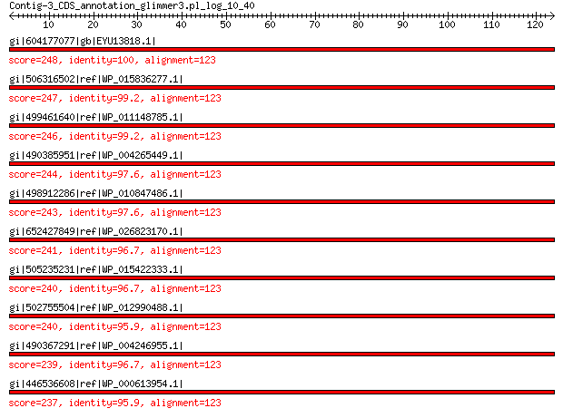

bitscore colors: <40, 40-50 , 50-80, 80-200, >200
 BLASTP 2.2.31+
Reference: Stephen F. Altschul, Thomas L. Madden, Alejandro A.
Schaffer, Jinghui Zhang, Zheng Zhang, Webb Miller, and David J.
Lipman (1997), "Gapped BLAST and PSI-BLAST: a new generation of
protein database search programs", Nucleic Acids Res. 25:3389-3402.
Reference for composition-based statistics: Alejandro A. Schaffer,
L. Aravind, Thomas L. Madden, Sergei Shavirin, John L. Spouge, Yuri
I. Wolf, Eugene V. Koonin, and Stephen F. Altschul (2001),
"Improving the accuracy of PSI-BLAST protein database searches with
composition-based statistics and other refinements", Nucleic Acids
Res. 29:2994-3005.
Database: All non-redundant GenBank CDS translations+PDB+SwissProt+PIR+PRF
excluding environmental samples from WGS projects
49,011,213 sequences; 17,563,301,199 total letters
Query= Contig-3_CDS_annotation_glimmer3.pl_log_10_40
Length=123
Score E
Sequences producing significant alignments: (Bits) Value
gi|604177077|gb|EYU13818.1| LSU ribosomal protein L14P 248 5e-82
gi|506316502|ref|WP_015836277.1| MULTISPECIES: 50S ribosomal pro... 247 8e-82
gi|499461640|ref|WP_011148785.1| 50S ribosomal protein L14 246 1e-81
gi|490385951|ref|WP_004265449.1| MULTISPECIES: 50S ribosomal pro... 244 8e-81
gi|498912286|ref|WP_010847486.1| 50S ribosomal protein L14 243 2e-80
gi|652427849|ref|WP_026823170.1| 50S ribosomal protein L14 241 2e-79
gi|505235231|ref|WP_015422333.1| 50S ribosomal protein L14 240 5e-79
gi|502755504|ref|WP_012990488.1| 50S ribosomal protein L14 240 5e-79
gi|490367291|ref|WP_004246955.1| MULTISPECIES: 50S ribosomal pro... 239 6e-79
gi|446536608|ref|WP_000613954.1| MULTISPECIES: 50S ribosomal pro... 237 6e-78
>gi|604177077|gb|EYU13818.1| LSU ribosomal protein L14P [Photorhabdus luminescens BA1]
Length=123
Score = 248 bits (632), Expect = 5e-82, Method: Compositional matrix adjust.
Identities = 123/123 (100%), Positives = 123/123 (100%), Gaps = 0/123 (0%)
Query 1 MIQEQTMLNVADNSGARRVMCIKVLGGSHRRYAHVGDIIKVTIKEAIPRGKVKKGDVLKA 60
MIQEQTMLNVADNSGARRVMCIKVLGGSHRRYAHVGDIIKVTIKEAIPRGKVKKGDVLKA
Sbjct 1 MIQEQTMLNVADNSGARRVMCIKVLGGSHRRYAHVGDIIKVTIKEAIPRGKVKKGDVLKA 60
Query 61 VVVRTKKGVRRPDGSVIRFDGNACVLLNNTSEQVIGTRIFGPVTRELRNEKFMKIISLAP 120
VVVRTKKGVRRPDGSVIRFDGNACVLLNNTSEQVIGTRIFGPVTRELRNEKFMKIISLAP
Sbjct 61 VVVRTKKGVRRPDGSVIRFDGNACVLLNNTSEQVIGTRIFGPVTRELRNEKFMKIISLAP 120
Query 121 EVL 123
EVL
Sbjct 121 EVL 123
>gi|506316502|ref|WP_015836277.1| MULTISPECIES: 50S ribosomal protein L14 [Photorhabdus]
gi|253991679|ref|YP_003043035.1| 50s ribosomal subunit protein l14 [Photorhabdus asymbiotica]
gi|253783129|emb|CAQ86294.1| 50s ribosomal subunit protein l14 [Photorhabdus asymbiotica]
gi|530711211|gb|EQC02072.1| 50s ribosomal subunit protein l14 [Photorhabdus temperata subsp.
temperata M1021]
gi|550875186|gb|ERT14219.1| 50S ribosomal protein L14 [Photorhabdus temperata J3]
gi|572731301|gb|ETS29490.1| LSU ribosomal protein L14P [Photorhabdus temperata subsp. khanii
NC19]
gi|662546832|gb|KER01470.1| LSU ribosomal protein L14P [Photorhabdus temperata subsp. temperata
Meg1]
Length=123
Score = 247 bits (630), Expect = 8e-82, Method: Compositional matrix adjust.
Identities = 122/123 (99%), Positives = 123/123 (100%), Gaps = 0/123 (0%)
Query 1 MIQEQTMLNVADNSGARRVMCIKVLGGSHRRYAHVGDIIKVTIKEAIPRGKVKKGDVLKA 60
MIQEQTMLNVADNSGARRVMCIKVLGGSHRRYAHVGDIIK+TIKEAIPRGKVKKGDVLKA
Sbjct 1 MIQEQTMLNVADNSGARRVMCIKVLGGSHRRYAHVGDIIKITIKEAIPRGKVKKGDVLKA 60
Query 61 VVVRTKKGVRRPDGSVIRFDGNACVLLNNTSEQVIGTRIFGPVTRELRNEKFMKIISLAP 120
VVVRTKKGVRRPDGSVIRFDGNACVLLNNTSEQVIGTRIFGPVTRELRNEKFMKIISLAP
Sbjct 61 VVVRTKKGVRRPDGSVIRFDGNACVLLNNTSEQVIGTRIFGPVTRELRNEKFMKIISLAP 120
Query 121 EVL 123
EVL
Sbjct 121 EVL 123
>gi|499461640|ref|WP_011148785.1| 50S ribosomal protein L14 [Photorhabdus luminescens]
gi|37528533|ref|NP_931878.1| 50S ribosomal protein L14 [Photorhabdus luminescens subsp. laumondii
TTO1]
gi|81707527|sp|Q7MYG1.1|RL14_PHOLL RecName: Full=50S ribosomal protein L14 [Photorhabdus luminescens
subsp. laumondii TTO1]
gi|36787971|emb|CAE17088.1| 50S ribosomal protein L14 [Photorhabdus luminescens subsp. laumondii
TTO1]
Length=123
Score = 246 bits (629), Expect = 1e-81, Method: Compositional matrix adjust.
Identities = 122/123 (99%), Positives = 123/123 (100%), Gaps = 0/123 (0%)
Query 1 MIQEQTMLNVADNSGARRVMCIKVLGGSHRRYAHVGDIIKVTIKEAIPRGKVKKGDVLKA 60
MIQEQTMLNVADNSGARRVMCIKVLGGSHRRYAHVGDIIKVTIKEAIPRGKVKKGDVLKA
Sbjct 1 MIQEQTMLNVADNSGARRVMCIKVLGGSHRRYAHVGDIIKVTIKEAIPRGKVKKGDVLKA 60
Query 61 VVVRTKKGVRRPDGSVIRFDGNACVLLNNTSEQVIGTRIFGPVTRELRNEKFMKIISLAP 120
VVVRT+KGVRRPDGSVIRFDGNACVLLNNTSEQVIGTRIFGPVTRELRNEKFMKIISLAP
Sbjct 61 VVVRTRKGVRRPDGSVIRFDGNACVLLNNTSEQVIGTRIFGPVTRELRNEKFMKIISLAP 120
Query 121 EVL 123
EVL
Sbjct 121 EVL 123
>gi|490385951|ref|WP_004265449.1| MULTISPECIES: 50S ribosomal protein L14 [Providencia]
gi|212688357|gb|EEB47885.1| ribosomal protein L14 [Providencia alcalifaciens DSM 30120]
gi|282564990|gb|EFB70525.1| ribosomal protein L14 [Providencia rustigianii DSM 4541]
gi|291310829|gb|EFE51282.1| ribosomal protein L14 [Providencia rettgeri DSM 1131]
gi|414097889|gb|EKT59541.1| 50S ribosomal protein L14 [Providencia rettgeri Dmel1]
gi|414100336|gb|EKT61955.1| 50S ribosomal protein L14 [Providencia alcalifaciens Dmel2]
gi|573498043|gb|ETS98585.1| ribosomal protein L14 [Providencia alcalifaciens PAL-3]
gi|573506355|gb|ETT06542.1| ribosomal protein L14 [Providencia alcalifaciens F90-2004]
gi|577056681|gb|EUC94156.1| ribosomal protein L14 [Providencia alcalifaciens PAL-2]
gi|577064568|gb|EUD01484.1| ribosomal protein L14 [Providencia alcalifaciens PAL-1]
gi|577067714|gb|EUD04453.1| ribosomal protein L14 [Providencia alcalifaciens RIMD 1656011]
gi|577069177|gb|EUD05758.1| ribosomal protein L14 [Providencia alcalifaciens R90-1475]
gi|577073820|gb|EUD10068.1| ribosomal protein L14 [Providencia alcalifaciens 205/92]
Length=123
Score = 244 bits (624), Expect = 8e-81, Method: Compositional matrix adjust.
Identities = 120/123 (98%), Positives = 122/123 (99%), Gaps = 0/123 (0%)
Query 1 MIQEQTMLNVADNSGARRVMCIKVLGGSHRRYAHVGDIIKVTIKEAIPRGKVKKGDVLKA 60
MIQEQTMLNVADNSGARRVMCIKVLGGSHRRYAHVGDIIK+T+KEAIPRGKVKKGDVLKA
Sbjct 1 MIQEQTMLNVADNSGARRVMCIKVLGGSHRRYAHVGDIIKITVKEAIPRGKVKKGDVLKA 60
Query 61 VVVRTKKGVRRPDGSVIRFDGNACVLLNNTSEQVIGTRIFGPVTRELRNEKFMKIISLAP 120
VVVRTKKGVRRPDGSVIRFDGNACVLLNN SEQVIGTRIFGPVTRELRNEKFMKIISLAP
Sbjct 61 VVVRTKKGVRRPDGSVIRFDGNACVLLNNNSEQVIGTRIFGPVTRELRNEKFMKIISLAP 120
Query 121 EVL 123
EVL
Sbjct 121 EVL 123
>gi|498912286|ref|WP_010847486.1| 50S ribosomal protein L14 [Xenorhabdus nematophila]
gi|300721376|ref|YP_003710647.1| 50S ribosomal protein L14 [Xenorhabdus nematophila ATCC 19061]
gi|297627864|emb|CBJ88410.1| 50S ribosomal subunit protein L14 [Xenorhabdus nematophila ATCC
19061]
gi|484362897|emb|CCW30286.1| 50S ribosomal protein L14 [Xenorhabdus nematophila F1]
gi|575846147|emb|CDL84406.1| 50S ribosomal protein L14 [Xenorhabdus szentirmaii DSM 16338]
gi|661559767|emb|CDG15998.1| 50S ribosomal protein L14 [Xenorhabdus doucetiae]
gi|661566764|emb|CDG23166.1| 50S ribosomal protein L14 [Xenorhabdus poinarii G6]
Length=123
Score = 243 bits (621), Expect = 2e-80, Method: Compositional matrix adjust.
Identities = 120/123 (98%), Positives = 121/123 (98%), Gaps = 0/123 (0%)
Query 1 MIQEQTMLNVADNSGARRVMCIKVLGGSHRRYAHVGDIIKVTIKEAIPRGKVKKGDVLKA 60
MIQEQTMLNVADNSGARRVMCIKVLGGSHRRYAHVGDIIK+TIKEAIPRGKVKKGDVLKA
Sbjct 1 MIQEQTMLNVADNSGARRVMCIKVLGGSHRRYAHVGDIIKITIKEAIPRGKVKKGDVLKA 60
Query 61 VVVRTKKGVRRPDGSVIRFDGNACVLLNNTSEQVIGTRIFGPVTRELRNEKFMKIISLAP 120
VVVRTKKGVRRPDGSVIRFD NACVLLNN SEQVIGTRIFGPVTRELRNEKFMKIISLAP
Sbjct 61 VVVRTKKGVRRPDGSVIRFDSNACVLLNNNSEQVIGTRIFGPVTRELRNEKFMKIISLAP 120
Query 121 EVL 123
EVL
Sbjct 121 EVL 123
>gi|652427849|ref|WP_026823170.1| 50S ribosomal protein L14 [Arsenophonus nasoniae]
gi|284006153|emb|CBA71395.1| 50S ribosomal protein L14 [Arsenophonus nasoniae]
Length=123
Score = 241 bits (615), Expect = 2e-79, Method: Compositional matrix adjust.
Identities = 119/123 (97%), Positives = 121/123 (98%), Gaps = 0/123 (0%)
Query 1 MIQEQTMLNVADNSGARRVMCIKVLGGSHRRYAHVGDIIKVTIKEAIPRGKVKKGDVLKA 60
MIQEQTMLNVADNSGARRVMCIKVLGGSHRRYA VGDIIK+T+KEAIPRGKVKKGDVLKA
Sbjct 1 MIQEQTMLNVADNSGARRVMCIKVLGGSHRRYADVGDIIKITVKEAIPRGKVKKGDVLKA 60
Query 61 VVVRTKKGVRRPDGSVIRFDGNACVLLNNTSEQVIGTRIFGPVTRELRNEKFMKIISLAP 120
VVVRTKKGVRRPDGSVIRFDGNACVLLNNTSEQVIGTRIFGPVTRELR EKFMKIISLAP
Sbjct 61 VVVRTKKGVRRPDGSVIRFDGNACVLLNNTSEQVIGTRIFGPVTRELRTEKFMKIISLAP 120
Query 121 EVL 123
EVL
Sbjct 121 EVL 123
>gi|505235231|ref|WP_015422333.1| 50S ribosomal protein L14 [Morganella morganii]
gi|455737453|ref|YP_007503719.1| 50S ribosomal protein L14 [Morganella morganii subsp. morganii
KT]
gi|455419016|gb|AGG29346.1| 50S ribosomal protein L14 [Morganella morganii subsp. morganii
KT]
gi|570277867|gb|ETO41516.1| 50S ribosomal protein L14 [Morganella sp. EGD-HP17]
Length=123
Score = 240 bits (612), Expect = 5e-79, Method: Compositional matrix adjust.
Identities = 119/123 (97%), Positives = 120/123 (98%), Gaps = 0/123 (0%)
Query 1 MIQEQTMLNVADNSGARRVMCIKVLGGSHRRYAHVGDIIKVTIKEAIPRGKVKKGDVLKA 60
MIQEQTMLNVADNSGARRVMCIKVLGGSHRRYA VGDIIK+TIKEAIPRGKVKKGDVLKA
Sbjct 1 MIQEQTMLNVADNSGARRVMCIKVLGGSHRRYAAVGDIIKITIKEAIPRGKVKKGDVLKA 60
Query 61 VVVRTKKGVRRPDGSVIRFDGNACVLLNNTSEQVIGTRIFGPVTRELRNEKFMKIISLAP 120
VVVRTKKGVRRPDGSVIRFD NACVLLNN SEQVIGTRIFGPVTRELRNEKFMKIISLAP
Sbjct 61 VVVRTKKGVRRPDGSVIRFDSNACVLLNNNSEQVIGTRIFGPVTRELRNEKFMKIISLAP 120
Query 121 EVL 123
EVL
Sbjct 121 EVL 123
>gi|502755504|ref|WP_012990488.1| 50S ribosomal protein L14 [Xenorhabdus bovienii]
gi|290477182|ref|YP_003470097.1| 50S ribosomal protein L14 [Xenorhabdus bovienii SS-2004]
gi|289176530|emb|CBJ83339.1| 50S ribosomal subunit protein L14 [Xenorhabdus bovienii SS-2004]
gi|666603407|emb|CDH29088.1| 50S ribosomal subunit protein L14 [Xenorhabdus bovienii str.
Jollieti]
gi|666608319|emb|CDH05730.1| 50S ribosomal subunit protein L14 [Xenorhabdus bovienii str.
oregonense]
gi|666612579|emb|CDH19747.1| 50S ribosomal subunit protein L14 [Xenorhabdus bovienii str.
kraussei Quebec]
gi|666617966|emb|CDG87093.1| 50S ribosomal subunit protein L14 [Xenorhabdus bovienii str.
feltiae France]
gi|666621612|emb|CDG92293.1| 50S ribosomal subunit protein L14 [Xenorhabdus bovienii str.
feltiae Florida]
gi|666628086|emb|CDG99530.1| 50S ribosomal subunit protein L14 [Xenorhabdus bovienii str.
feltiae Moldova]
gi|666631597|emb|CDH31947.1| 50S ribosomal subunit protein L14 [Xenorhabdus bovienii str.
Intermedium]
gi|666634415|emb|CDH25414.1| 50S ribosomal subunit protein L14 [Xenorhabdus bovienii str.
kraussei Becker Underwood]
gi|668988318|emb|CDG95309.1| 50S ribosomal subunit protein L14 [Xenorhabdus bovienii str.
puntauvense]
Length=123
Score = 240 bits (612), Expect = 5e-79, Method: Compositional matrix adjust.
Identities = 118/123 (96%), Positives = 121/123 (98%), Gaps = 0/123 (0%)
Query 1 MIQEQTMLNVADNSGARRVMCIKVLGGSHRRYAHVGDIIKVTIKEAIPRGKVKKGDVLKA 60
MIQEQTMLNVADNSGARRVMCIKVLGGSHRRYA+VGD+IK+TIKEAIPRGKVKKGDVLKA
Sbjct 1 MIQEQTMLNVADNSGARRVMCIKVLGGSHRRYANVGDVIKITIKEAIPRGKVKKGDVLKA 60
Query 61 VVVRTKKGVRRPDGSVIRFDGNACVLLNNTSEQVIGTRIFGPVTRELRNEKFMKIISLAP 120
VVVRTKKGVRRPDGSVIRFD NACVLLNN SEQVIGTRIFGPVTRELRNEKFMKIISLAP
Sbjct 61 VVVRTKKGVRRPDGSVIRFDSNACVLLNNNSEQVIGTRIFGPVTRELRNEKFMKIISLAP 120
Query 121 EVL 123
EVL
Sbjct 121 EVL 123
>gi|490367291|ref|WP_004246955.1| MULTISPECIES: 50S ribosomal protein L14 [Proteus]
gi|197287078|ref|YP_002152950.1| 50S ribosomal protein L14 [Proteus mirabilis HI4320]
gi|226705540|sp|B4F1J4.1|RL14_PROMH RecName: Full=50S ribosomal protein L14 [Proteus mirabilis HI4320]
gi|194684565|emb|CAR46397.1| 50S ribosomal protein L14 [Proteus mirabilis HI4320]
gi|225202677|gb|EEG85031.1| ribosomal protein L14 [Proteus penneri ATCC 35198]
gi|227165006|gb|EEI49845.1| ribosomal protein L14 [Proteus mirabilis ATCC 29906]
gi|404595466|gb|EKA96010.1| 50S ribosomal protein L14 [Proteus mirabilis WGLW6]
gi|404600168|gb|EKB00616.1| 50S ribosomal protein L14 [Proteus mirabilis WGLW4]
gi|558646610|gb|EST57102.1| 50S ribosomal protein L14 [Proteus hauseri ZMd44]
gi|575849922|emb|CDL87617.1| 50S ribosomal protein L14 [Xenorhabdus cabanillasii JM26]
Length=123
Score = 239 bits (611), Expect = 6e-79, Method: Compositional matrix adjust.
Identities = 119/123 (97%), Positives = 120/123 (98%), Gaps = 0/123 (0%)
Query 1 MIQEQTMLNVADNSGARRVMCIKVLGGSHRRYAHVGDIIKVTIKEAIPRGKVKKGDVLKA 60
MIQEQTMLNVADNSGARRVMCIKVLGGSHRRYA VGDIIK+TIKEAIPRGKVKKGDVLKA
Sbjct 1 MIQEQTMLNVADNSGARRVMCIKVLGGSHRRYADVGDIIKITIKEAIPRGKVKKGDVLKA 60
Query 61 VVVRTKKGVRRPDGSVIRFDGNACVLLNNTSEQVIGTRIFGPVTRELRNEKFMKIISLAP 120
VVVRTKKGVRRPDGSVIRFD NACVLLNN SEQVIGTRIFGPVTRELRNEKFMKIISLAP
Sbjct 61 VVVRTKKGVRRPDGSVIRFDSNACVLLNNNSEQVIGTRIFGPVTRELRNEKFMKIISLAP 120
Query 121 EVL 123
EVL
Sbjct 121 EVL 123
>gi|446536608|ref|WP_000613954.1| MULTISPECIES: 50S ribosomal protein L14 [Enterobacteriaceae]
gi|16762853|ref|NP_458470.1| 50S ribosomal subunit protein L14 [Salmonella enterica subsp.
enterica serovar Typhi str. CT18]
gi|16766719|ref|NP_462334.1| 50S ribosomal protein L14 [Salmonella enterica subsp. enterica
serovar Typhimurium str. LT2]
gi|29144340|ref|NP_807682.1| 50S ribosomal protein L14 [Salmonella enterica subsp. enterica
serovar Typhi str. Ty2]
gi|50122941|ref|YP_052108.1| 50S ribosomal protein L14 [Pectobacterium atrosepticum SCRI1043]
gi|56415349|ref|YP_152424.1| 50S ribosomal protein L14 [Salmonella enterica subsp. enterica
serovar Paratyphi A str. ATCC 9150]
gi|62181934|ref|YP_218351.1| 50S ribosomal protein L14 [Salmonella enterica subsp. enterica
serovar Choleraesuis str. SC-B67]
gi|161506018|ref|YP_001573130.1| 50S ribosomal protein L14 [Salmonella enterica subsp. arizonae
serovar 62:z4,z23:- str. RSK2980]
gi|194443435|ref|YP_002042680.1| 50S ribosomal protein L14 [Salmonella enterica subsp. enterica
serovar Newport str. SL254]
gi|194449276|ref|YP_002047453.1| 50S ribosomal protein L14 [Salmonella enterica subsp. enterica
serovar Heidelberg str. SL476]
gi|194736930|ref|YP_002116372.1| 50S ribosomal protein L14 [Salmonella enterica subsp. enterica
serovar Schwarzengrund str. CVM19633]
gi|197250181|ref|YP_002148349.1| 50S ribosomal protein L14 [Salmonella enterica subsp. enterica
serovar Agona str. SL483]
gi|197364279|ref|YP_002143916.1| 50S ribosomal protein L14 [Salmonella enterica subsp. enterica
serovar Paratyphi A str. AKU_12601]
gi|198244892|ref|YP_002217392.1| 50S ribosomal protein L14 [Salmonella enterica subsp. enterica
serovar Dublin str. CT_02021853]
gi|205354942|ref|YP_002228743.1| 50S ribosomal protein L14 [Salmonella enterica subsp. enterica
serovar Gallinarum str. 287/91]
gi|207858672|ref|YP_002245323.1| 50S ribosomal protein L14 [Salmonella enterica subsp. enterica
serovar Enteritidis str. P125109]
gi|253690173|ref|YP_003019363.1| 50S ribosomal protein L14 [Pectobacterium carotovorum subsp.
carotovorum PC1]
gi|261823222|ref|YP_003261328.1| 50S ribosomal protein L14 [Pectobacterium wasabiae WPP163]
gi|311277735|ref|YP_003939966.1| 50S ribosomal protein L14 [Enterobacter lignolyticus SCF1]
gi|336247477|ref|YP_004591187.1| 50S ribosomal protein L14 [Enterobacter aerogenes KCTC 2190]
gi|340000968|ref|YP_004731852.1| 50S ribosomal protein L14 [Salmonella bongori NCTC 12419]
gi|375257671|ref|YP_005016841.1| 50S ribosomal protein L14 [Klebsiella oxytoca KCTC 1686]
gi|378446808|ref|YP_005234440.1| 50S ribosomal protein L14 [Salmonella enterica subsp. enterica
serovar Typhimurium str. D23580]
gi|378452260|ref|YP_005239620.1| 50S ribosomal protein L14 [Salmonella enterica subsp. enterica
serovar Typhimurium str. 14028S]
gi|378701324|ref|YP_005183282.1| 50S ribosomal protein L14 [Salmonella enterica subsp. enterica
serovar Typhimurium str. SL1344]
gi|378962257|ref|YP_005219743.1| hypothetical protein STBHUCCB_43120 [Salmonella enterica subsp.
enterica serovar Typhi str. P-stx-12]
gi|378986024|ref|YP_005249180.1| 50S ribosomal protein L14 [Salmonella enterica subsp. enterica
serovar Typhimurium str. T000240]
gi|378990735|ref|YP_005253899.1| 50S ribosomal protein L14 [Salmonella enterica subsp. enterica
serovar Typhimurium str. UK-1]
gi|379702689|ref|YP_005244417.1| 50S ribosomal protein L14 [Salmonella enterica subsp. enterica
serovar Typhimurium str. ST4/74]
gi|387887639|ref|YP_006317937.1| 50S ribosomal protein L14 [Shimwellia blattae DSM 4481 = NBRC
105725]
gi|394894452|ref|YP_001590421.2| 50S ribosomal protein L14 [Salmonella enterica subsp. enterica
serovar Paratyphi B str. SPB7]
gi|394894988|ref|YP_002639024.2| 50S ribosomal protein L14 [Salmonella enterica subsp. enterica
serovar Paratyphi C str. RKS4594]
gi|403060239|ref|YP_006648456.1| 50S ribosomal protein L14 [Pectobacterium carotovorum subsp.
carotovorum PCC21]
gi|409247141|ref|YP_006887841.1| 50S ribosomal protein L14 [Salmonella enterica subsp. enterica
serovar Weltevreden str. 2007-60-3289-1]
gi|440232829|ref|YP_007346622.1| LSU ribosomal protein L14P [Serratia marcescens FGI94]
gi|440285879|ref|YP_007338644.1| LSU ribosomal protein L14P [Enterobacteriaceae bacterium strain
FGI 57]
gi|448244246|ref|YP_007408299.1| 50S ribosomal subunit protein L14 [Serratia marcescens WW4]
gi|452122757|ref|YP_007473005.1| 50S ribosomal protein L14 [Salmonella enterica subsp. enterica
serovar Javiana str. CFSAN001992]
gi|470156576|ref|YP_006285078.1| 50S ribosomal protein L14 [Pectobacterium sp. SCC3193]
gi|482905997|ref|YP_007904557.1| 50S ribosomal protein L14 [Salmonella enterica subsp. enterica
serovar Typhimurium str. U288]
gi|488656515|ref|YP_007928318.1| 50S ribosomal protein L14 [Salmonella enterica subsp. enterica
serovar Typhi str. Ty21a]
gi|525814700|ref|YP_008244718.1| 50S ribosomal protein L14 [Salmonella enterica subsp. enterica
serovar Heidelberg str. 41578]
gi|525828813|ref|YP_008251782.1| 50S ribosomal protein L14 [Salmonella enterica subsp. enterica
serovar Heidelberg str. CFSAN002069]
gi|525840427|ref|YP_008257954.1| 50S ribosomal protein L14 [Salmonella enterica subsp. enterica
serovar Typhimurium var. 5- str. CFSAN001921]
gi|525859133|ref|YP_008262677.1| 50S ribosomal protein L14 [Salmonella enterica subsp. enterica
serovar Cubana str. CFSAN002050]
gi|525945891|ref|YP_008306909.1| 50S ribosomal protein L14 [Salmonella enterica subsp. enterica
serovar Bareilly str. CFSAN000189]
gi|526218620|ref|YP_008263822.1| 50S ribosomal protein L14 [Salmonella enterica subsp. enterica
serovar 4 [Salmonella enterica subsp. enterica serovar 4,[5],12:i:-
str. 08-1736]
gi|529221688|ref|YP_008383278.1| 50S ribosomal protein L14 [Salmonella enterica subsp. enterica
serovar Pullorum str. S06004]
gi|549480770|ref|YP_008615068.1| 50S ribosomal protein L14 [Salmonella enterica subsp. enterica
serovar Thompson str. RM6836]
gi|549725985|ref|YP_008646175.1| 50S ribosomal protein L14 [Salmonella enterica subsp. enterica
serovar Typhimurium str. DT2]
gi|550902777|ref|YP_008671869.1| 50S ribosomal protein L14 [Salmonella enterica subsp. enterica
serovar Typhimurium str. DT104]
gi|563654771|ref|YP_008862857.1| 50S ribosomal protein L14 [Salmonella enterica subsp. enterica
serovar Agona str. 24249]
gi|75480358|sp|Q57J42.1|RL14_SALCH RecName: Full=50S ribosomal protein L14 [Salmonella enterica
subsp. enterica serovar Choleraesuis str. SC-B67]
gi|81677961|sp|Q5PIU3.1|RL14_SALPA RecName: Full=50S ribosomal protein L14 [Salmonella enterica
subsp. enterica serovar Paratyphi A str. ATCC 9150]
gi|81693074|sp|Q6CZY0.1|RL14_PECAS RecName: Full=50S ribosomal protein L14 [Pectobacterium atrosepticum
SCRI1043]
gi|81706859|sp|Q7CPL5.1|RL14_SALTY RecName: Full=50S ribosomal protein L14 [Salmonella enterica
subsp. enterica serovar Typhimurium str. LT2]
gi|81766275|sp|Q8XG78.1|RL14_SALTI RecName: Full=50S ribosomal protein L14 [Salmonella enterica
subsp. enterica serovar Typhi]
gi|189041368|sp|A9MN58.1|RL14_SALAR RecName: Full=50S ribosomal protein L14 [Salmonella enterica
subsp. arizonae serovar 62:z4,z23:-]
gi|218546958|sp|A9MSY8.2|RL14_SALPB RecName: Full=50S ribosomal protein L14
gi|226705548|sp|B5F7T5.1|RL14_SALA4 RecName: Full=50S ribosomal protein L14 [Salmonella enterica
subsp. enterica serovar Agona str. SL483]
gi|226705549|sp|B5FJK4.1|RL14_SALDC RecName: Full=50S ribosomal protein L14 [Salmonella enterica
subsp. enterica serovar Dublin str. CT_02021853]
gi|226705550|sp|B5R281.1|RL14_SALEP RecName: Full=50S ribosomal protein L14 [Salmonella enterica
subsp. enterica serovar Enteritidis str. P125109]
gi|226705551|sp|B5RH25.1|RL14_SALG2 RecName: Full=50S ribosomal protein L14 [Salmonella enterica
subsp. enterica serovar Gallinarum str. 287/91]
gi|226705552|sp|B4TKK5.1|RL14_SALHS RecName: Full=50S ribosomal protein L14 [Salmonella enterica
subsp. enterica serovar Heidelberg str. SL476]
gi|226705553|sp|B4SUT0.1|RL14_SALNS RecName: Full=50S ribosomal protein L14 [Salmonella enterica
subsp. enterica serovar Newport str. SL254]
gi|226705554|sp|B5BGX6.1|RL14_SALPK RecName: Full=50S ribosomal protein L14 [Salmonella enterica
subsp. enterica serovar Paratyphi A str. AKU_12601]
gi|226705555|sp|B4TXD2.1|RL14_SALSV RecName: Full=50S ribosomal protein L14 [Salmonella enterica
subsp. enterica serovar Schwarzengrund str. CVM19633]
gi|259645598|sp|C6DG64.1|RL14_PECCP RecName: Full=50S ribosomal protein L14 [Pectobacterium carotovorum
subsp. carotovorum PC1]
gi|25295207|pir||AC1007 50S ribosomal chain protein L14 [imported] - Salmonella enterica
subsp. enterica serovar Typhi (strain CT18)
gi|16421986|gb|AAL22293.1| 50S ribosomal subunit protein L14 [Salmonella enterica subsp.
enterica serovar Typhimurium str. LT2]
gi|16505160|emb|CAD09156.1| 50S ribosomal subunit protein L14 [Salmonella enterica subsp.
enterica serovar Typhi str. CT18]
gi|29139978|gb|AAO71542.1| 50S ribosomal subunit protein L14 [Salmonella enterica subsp.
enterica serovar Typhi str. Ty2]
gi|49613467|emb|CAG76918.1| 50S ribosomal subunit protein L14 [Pectobacterium atrosepticum
SCRI1043]
gi|56129606|gb|AAV79112.1| 50S ribosomal subunit protein L14 [Salmonella enterica subsp.
enterica serovar Paratyphi A str. ATCC 9150]
gi|62129567|gb|AAX67270.1| 50S ribosomal subunit protein L14 [Salmonella enterica subsp.
enterica serovar Choleraesuis str. SC-B67]
gi|160867365|gb|ABX23988.1| hypothetical protein SARI_04199 [Salmonella enterica subsp. arizonae
serovar 62:z4,z23:-]
gi|194402098|gb|ACF62320.1| ribosomal protein L14 [Salmonella enterica subsp. enterica serovar
Newport str. SL254]
gi|194407580|gb|ACF67799.1| ribosomal protein L14 [Salmonella enterica subsp. enterica serovar
Heidelberg str. SL476]
gi|194458876|gb|EDX47715.1| ribosomal protein L14 [Salmonella enterica subsp. enterica serovar
Kentucky str. CVM29188]
gi|194712432|gb|ACF91653.1| ribosomal protein L14 [Salmonella enterica subsp. enterica serovar
Schwarzengrund str. CVM19633]
gi|195628903|gb|EDX48313.1| ribosomal protein L14 [Salmonella enterica subsp. enterica serovar
Newport str. SL317]
gi|197095756|emb|CAR61326.1| 50S ribosomal subunit protein L14 [Salmonella enterica subsp.
enterica serovar Paratyphi A str. AKU_12601]
gi|197213884|gb|ACH51281.1| ribosomal protein L14 [Salmonella enterica subsp. enterica serovar
Agona str. SL483]
gi|197240879|gb|EDY23499.1| ribosomal protein L14 [Salmonella enterica subsp. enterica serovar
Saintpaul str. SARA23]
gi|197939408|gb|ACH76741.1| ribosomal protein L14 [Salmonella enterica subsp. enterica serovar
Dublin str. CT_02021853]
gi|199604914|gb|EDZ03459.1| ribosomal protein L14 [Salmonella enterica subsp. enterica serovar
Virchow str. SL491]
gi|205274723|emb|CAR39779.1| 50S ribosomal subunit protein L14 [Salmonella enterica subsp.
enterica serovar Gallinarum str. 287/91]
gi|205346886|gb|EDZ33517.1| ribosomal protein L14 [Salmonella enterica subsp. enterica serovar
Hadar str. RI_05P066]
gi|206710475|emb|CAR34833.1| 50S ribosomal subunit protein L14 [Salmonella enterica subsp.
enterica serovar Enteritidis str. P125109]
gi|226909267|gb|EEH95185.1| 50S ribosomal protein L14 [Citrobacter sp. 30_2]
gi|251756751|gb|ACT14827.1| ribosomal protein L14 [Pectobacterium carotovorum subsp. carotovorum
PC1]
gi|261248587|emb|CBG26425.1| 50S ribosomal subunit protein L14 [Salmonella enterica subsp.
enterica serovar Typhimurium str. D23580]
gi|261607235|gb|ACX89721.1| ribosomal protein L14 [Pectobacterium wasabiae WPP163]
gi|267995639|gb|ACY90524.1| 50S ribosomal protein L14 [Salmonella enterica subsp. enterica
serovar Typhimurium str. 14028S]
gi|291068406|gb|EFE06515.1| ribosomal protein L14 [Citrobacter youngae ATCC 29220]
gi|291424211|gb|EFE97426.1| ribosomal protein L14 [Serratia odorifera DSM 4582]
gi|301159973|emb|CBW19492.1| 50S ribosomal subunit protein L14 [Salmonella enterica subsp.
enterica serovar Typhimurium str. SL1344]
gi|308746930|gb|ADO46682.1| ribosomal protein L14 [Enterobacter lignolyticus SCF1]
gi|312914453|dbj|BAJ38427.1| 50S ribosomal protein L14 [Salmonella enterica subsp. enterica
serovar Typhimurium str. T000240]
gi|316917582|gb|EFV38927.1| 50S ribosomal protein L14 [Enterobacteriaceae bacterium 9_2_54FAA]
gi|320087875|emb|CBY97638.1| 50S ribosomal protein L14 [Salmonella enterica subsp. enterica
serovar Weltevreden str. 2007-60-3289-1]
gi|322615029|gb|EFY11953.1| 50S ribosomal protein L14 [Salmonella enterica subsp. enterica
serovar Montevideo str. 315996572]
gi|322617316|gb|EFY14217.1| 50S ribosomal protein L14 [Salmonella enterica subsp. enterica
serovar Montevideo str. 495297-1]
gi|322625538|gb|EFY22363.1| 50S ribosomal protein L14 [Salmonella enterica subsp. enterica
serovar Montevideo str. 495297-3]
gi|322626380|gb|EFY23189.1| 50S ribosomal protein L14 [Salmonella enterica subsp. enterica
serovar Montevideo str. 495297-4]
gi|322632108|gb|EFY28861.1| 50S ribosomal protein L14 [Salmonella enterica subsp. enterica
serovar Montevideo str. 515920-1]
gi|322635013|gb|EFY31736.1| 50S ribosomal protein L14 [Salmonella enterica subsp. enterica
serovar Montevideo str. 515920-2]
gi|322643286|gb|EFY39853.1| 50S ribosomal protein L14 [Salmonella enterica subsp. enterica
serovar Montevideo str. 531954]
gi|322646630|gb|EFY43137.1| 50S ribosomal protein L14 [Salmonella enterica subsp. enterica
serovar Montevideo str. NC_MB110209-0054]
gi|322649976|gb|EFY46395.1| 50S ribosomal protein L14 [Salmonella enterica subsp. enterica
serovar Montevideo str. OH_2009072675]
gi|322652693|gb|EFY49033.1| 50S ribosomal protein L14 [Salmonella enterica subsp. enterica
serovar Montevideo str. CASC_09SCPH15965]
gi|322659550|gb|EFY55794.1| 50S ribosomal protein L14 [Salmonella enterica subsp. enterica
serovar Montevideo str. 19N]
gi|322665508|gb|EFY61695.1| 50S ribosomal protein L14 [Salmonella enterica subsp. enterica
serovar Montevideo str. 81038-01]
gi|322670402|gb|EFY66541.1| 50S ribosomal protein L14 [Salmonella enterica subsp. enterica
serovar Montevideo str. MD_MDA09249507]
gi|322670475|gb|EFY66609.1| 50S ribosomal protein L14 [Salmonella enterica subsp. enterica
serovar Montevideo str. 414877]
gi|322675051|gb|EFY71134.1| 50S ribosomal protein L14 [Salmonella enterica subsp. enterica
serovar Montevideo str. 366867]
gi|322681588|gb|EFY77617.1| 50S ribosomal protein L14 [Salmonella enterica subsp. enterica
serovar Montevideo str. 413180]
gi|322685932|gb|EFY81921.1| 50S ribosomal protein L14 [Salmonella enterica subsp. enterica
serovar Montevideo str. 446600]
gi|322716421|gb|EFZ07992.1| 50S ribosomal protein L14 [Salmonella enterica subsp. enterica
serovar Choleraesuis str. SCSA50]
gi|323131788|gb|ADX19218.1| 50S ribosomal protein L14 [Salmonella enterica subsp. enterica
serovar Typhimurium str. ST4/74]
gi|323194040|gb|EFZ79240.1| 50S ribosomal protein L14 [Salmonella enterica subsp. enterica
serovar Montevideo str. 609458-1]
gi|323196442|gb|EFZ81593.1| 50S ribosomal protein L14 [Salmonella enterica subsp. enterica
serovar Montevideo str. 556150-1]
gi|323202319|gb|EFZ87364.1| 50S ribosomal protein L14 [Salmonella enterica subsp. enterica
serovar Montevideo str. 609460]
gi|323211232|gb|EFZ96077.1| 50S ribosomal protein L14 [Salmonella enterica subsp. enterica
serovar Montevideo str. 556152]
gi|323216059|gb|EGA00790.1| 50S ribosomal protein L14 [Salmonella enterica subsp. enterica
serovar Montevideo str. MB101509-0077]
gi|323223450|gb|EGA07778.1| 50S ribosomal protein L14 [Salmonella enterica subsp. enterica
serovar Montevideo str. MB102109-0047]
gi|323226820|gb|EGA11010.1| 50S ribosomal protein L14 [Salmonella enterica subsp. enterica
serovar Montevideo str. MB110209-0055]
gi|323231818|gb|EGA15928.1| 50S ribosomal protein L14 [Salmonella enterica subsp. enterica
serovar Montevideo str. MB111609-0052]
gi|323233229|gb|EGA17324.1| 50S ribosomal protein L14 [Salmonella enterica subsp. enterica
serovar Montevideo str. 2009083312]
gi|323237296|gb|EGA21361.1| 50S ribosomal protein L14 [Salmonella enterica subsp. enterica
serovar Montevideo str. 2009085258]
gi|323245531|gb|EGA29530.1| 50S ribosomal protein L14 [Salmonella enterica subsp. enterica
serovar Montevideo str. 315731156]
gi|323249037|gb|EGA32959.1| 50S ribosomal protein L14 [Salmonella enterica subsp. enterica
serovar Montevideo str. IA_2009159199]
gi|323250660|gb|EGA34541.1| 50S ribosomal protein L14 [Salmonella enterica subsp. enterica
serovar Montevideo str. IA_2010008282]
gi|323256889|gb|EGA40603.1| 50S ribosomal protein L14 [Salmonella enterica subsp. enterica
serovar Montevideo str. IA_2010008283]
gi|323263038|gb|EGA46585.1| 50S ribosomal protein L14 [Salmonella enterica subsp. enterica
serovar Montevideo str. IA_2010008284]
gi|323266038|gb|EGA49533.1| 50S ribosomal protein L14 [Salmonella enterica subsp. enterica
serovar Montevideo str. IA_2010008285]
gi|323272795|gb|EGA56198.1| 50S ribosomal protein L14 [Salmonella enterica subsp. enterica
serovar Montevideo str. IA_2010008287]
gi|326625173|gb|EGE31518.1| 50S ribosomal protein L14 [Salmonella enterica subsp. enterica
serovar Dublin str. SD3246]
gi|326630091|gb|EGE36434.1| 50S ribosomal protein L14 [Salmonella enterica subsp. enterica
serovar Gallinarum str. SG9]
gi|332990282|gb|AEF09265.1| 50S ribosomal protein L14 [Salmonella enterica subsp. enterica
serovar Typhimurium str. UK-1]
gi|334733533|gb|AEG95908.1| 50S ribosomal protein L14 [Enterobacter aerogenes KCTC 2190]
gi|339514330|emb|CCC32093.1| 50S ribosomal subunit protein L14 [Salmonella bongori NCTC 12419]
gi|353074203|gb|EHB39964.1| ribosomal protein L14 [Salmonella enterica subsp. enterica serovar
Infantis str. SARB27]
gi|353673862|gb|EHD19895.1| ribosomal protein L14 [Brenneria sp. EniD312]
gi|363549399|gb|EHL33753.1| 50S ribosomal protein L14 [Salmonella enterica subsp. enterica
serovar Montevideo str. SARB31]
gi|363559169|gb|EHL43344.1| 50S ribosomal protein L14 [Salmonella enterica subsp. enterica
serovar Montevideo str. LQC 10]
gi|363559875|gb|EHL44024.1| 50S ribosomal protein L14 [Salmonella enterica subsp. enterica
serovar Montevideo str. SARB30]
gi|363562443|gb|EHL46541.1| 50S ribosomal protein L14 [Salmonella enterica subsp. enterica
serovar Montevideo str. ATCC BAA710]
gi|363564726|gb|EHL48768.1| 50S ribosomal protein L14 [Salmonella enterica subsp. enterica
serovar Montevideo str. 29N]
gi|363575855|gb|EHL59701.1| 50S ribosomal protein L14 [Salmonella enterica subsp. enterica
serovar Montevideo str. 42N]
gi|363579137|gb|EHL62931.1| 50S ribosomal protein L14 [Salmonella enterica subsp. enterica
serovar Montevideo str. 4441 H]
gi|363645798|gb|EHL85053.1| 50S ribosomal protein L14 [Citrobacter freundii 4_7_47CFAA]
gi|364568807|gb|EHM46445.1| ribosomal protein L14 [Hafnia alvei ATCC 51873]
gi|364573489|gb|EHM50985.1| ribosomal protein L14 [Yokenella regensburgei ATCC 43003]
gi|365907149|gb|AEX02602.1| 50S ribosomal protein L14 [Klebsiella oxytoca KCTC 1686]
gi|366059744|gb|EHN24012.1| 50S ribosomal protein L14 [Salmonella enterica subsp. enterica
serovar Montevideo str. CT_02035318]
gi|366064211|gb|EHN28412.1| 50S ribosomal protein L14 [Salmonella enterica subsp. enterica
serovar Montevideo str. 80959-06]
gi|366068316|gb|EHN32460.1| 50S ribosomal protein L14 [Salmonella enterica subsp. enterica
serovar Montevideo str. CT_02035278]
gi|366072607|gb|EHN36696.1| 50S ribosomal protein L14 [Salmonella enterica subsp. enterica
serovar Montevideo str. CT_02035321]
gi|366073045|gb|EHN37123.1| 50S ribosomal protein L14 [Salmonella enterica subsp. enterica
serovar Montevideo str. CT_02035320]
gi|366077171|gb|EHN41191.1| 50S ribosomal protein L14 [Salmonella enterica subsp. enterica
serovar Pomona str. ATCC 10729]
gi|366077200|gb|EHN41219.1| 50S ribosomal protein L14 [Salmonella enterica subsp. enterica
serovar Montevideo str. CT_02035327]
gi|372206654|gb|EHP20157.1| 50S ribosomal protein L14 [Salmonella enterica subsp. enterica
serovar Montevideo str. IA_2010008286]
gi|374356129|gb|AEZ47890.1| hypothetical protein STBHUCCB_43120 [Salmonella enterica subsp.
enterica serovar Typhi str. P-stx-12]
gi|376377629|gb|EHS90397.1| 50S ribosomal protein L14 [Klebsiella oxytoca 10-5245]
gi|376378727|gb|EHS91485.1| 50S ribosomal protein L14 [Klebsiella oxytoca 10-5243]
gi|376381931|gb|EHS94667.1| 50S ribosomal protein L14 [Klebsiella oxytoca 10-5242]
gi|376397651|gb|EHT10281.1| 50S ribosomal protein L14 [Klebsiella oxytoca 10-5250]
gi|379987456|emb|CCF86469.1| 50S ribosomal protein L14 [Salmonella enterica subsp. enterica
serovar Senftenberg str. SS209]
gi|381293064|gb|EIC34236.1| 50S ribosomal protein L14 [Salmonella enterica subsp. enterica
serovar Heidelberg str. 41579]
gi|381295660|gb|EIC36769.1| 50S ribosomal protein L14 [Salmonella enterica subsp. enterica
serovar Heidelberg str. 41563]
gi|381298396|gb|EIC39475.1| 50S ribosomal protein L14 [Salmonella enterica subsp. enterica
serovar Heidelberg str. 41573]
gi|381307348|gb|EIC48206.1| 50S ribosomal protein L14 [Salmonella enterica subsp. enterica
serovar Heidelberg str. 41565]
gi|381311774|gb|EIC52584.1| 50S ribosomal protein L14 [Salmonella enterica subsp. enterica
serovar Heidelberg str. 41566]
gi|385873686|gb|AFI92206.1| 50S ribosomal protein L14 [Pectobacterium sp. SCC3193]
gi|386922472|gb|AFJ45426.1| 50S ribosomal subunit protein L14 [Shimwellia blattae DSM 4481
= NBRC 105725]
gi|392613616|gb|EIW96071.1| 50S ribosomal protein L14 [Salmonella enterica subsp. enterica
serovar Newport str. Levine 15]
gi|392618666|gb|EIX01061.1| 50S ribosomal protein L14 [Salmonella enterica subsp. enterica
serovar Newport str. Levine 1]
gi|392732723|gb|EIZ89930.1| 50S ribosomal protein L14 [Salmonella enterica subsp. enterica
serovar Newport str. CVM 35199]
gi|392741506|gb|EIZ98606.1| 50S ribosomal protein L14 [Salmonella enterica subsp. enterica
serovar Newport str. CVM 21539]
gi|392743780|gb|EJA00846.1| 50S ribosomal protein L14 [Salmonella enterica subsp. enterica
serovar Newport str. CVM 35185]
gi|392744724|gb|EJA01768.1| 50S ribosomal protein L14 [Salmonella enterica subsp. enterica
serovar Newport str. CVM 35188]
gi|392751601|gb|EJA08549.1| 50S ribosomal protein L14 [Salmonella enterica subsp. enterica
serovar Newport str. CVM 33953]
gi|392754528|gb|EJA11444.1| 50S ribosomal protein L14 [Salmonella enterica subsp. enterica
serovar Newport str. CVM 21559]
gi|392759562|gb|EJA16413.1| 50S ribosomal protein L14 [Salmonella enterica subsp. enterica
serovar Newport str. CVM 19447]
gi|392761189|gb|EJA18018.1| 50S ribosomal protein L14 [Salmonella enterica subsp. enterica
serovar Newport str. CVM 19567]
gi|392767385|gb|EJA24154.1| 50S ribosomal protein L14 [Salmonella enterica subsp. enterica
serovar Newport str. CVM 19449]
gi|392778609|gb|EJA35281.1| 50S ribosomal protein L14 [Salmonella enterica subsp. enterica
serovar Newport str. CVM 35202]
gi|392780481|gb|EJA37133.1| 50S ribosomal protein L14 [Salmonella enterica subsp. enterica
serovar Newport str. CVM 22513]
gi|392781791|gb|EJA38429.1| 50S ribosomal protein L14 [Salmonella enterica subsp. enterica
serovar Newport str. CVM 21550]
gi|392784656|gb|EJA41244.1| 50S ribosomal protein L14 [Salmonella enterica subsp. enterica
serovar Newport str. CVM 22425]
gi|392785439|gb|EJA42015.1| 50S ribosomal protein L14 [Salmonella enterica subsp. enterica
serovar Newport str. CVM 21538]
gi|392797466|gb|EJA53773.1| 50S ribosomal protein L14 [Salmonella enterica subsp. enterica
serovar Newport str. CVM N1543]
gi|392801207|gb|EJA57436.1| 50S ribosomal protein L14 [Salmonella enterica subsp. enterica
serovar Newport str. CVM 22462]
gi|392804864|gb|EJA61003.1| 50S ribosomal protein L14 [Salmonella enterica subsp. enterica
serovar Newport str. CVM N18486]
gi|392808047|gb|EJA64102.1| 50S ribosomal protein L14 [Salmonella enterica subsp. enterica
serovar Newport str. CVM 21554]
gi|392809855|gb|EJA65884.1| 50S ribosomal protein L14 [Salmonella enterica subsp. enterica
serovar Newport str. CVM 19443]
gi|392817401|gb|EJA73315.1| 50S ribosomal protein L14 [Salmonella enterica subsp. enterica
serovar Newport str. CVM 37978]
gi|392823766|gb|EJA79560.1| 50S ribosomal protein L14 [Salmonella enterica subsp. enterica
serovar Newport str. CVM 19593]
gi|392825278|gb|EJA81030.1| 50S ribosomal protein L14 [Salmonella enterica subsp. enterica
serovar Newport str. CVM 19470]
gi|392827273|gb|EJA82983.1| 50S ribosomal protein L14 [Salmonella enterica subsp. enterica
serovar Newport str. CVM 19536]
gi|392830183|gb|EJA85839.1| 50S ribosomal protein L14 [Salmonella enterica subsp. enterica
serovar Newport str. CVM 4176]
gi|394714332|gb|EJF20311.1| 50S ribosomal protein L14 [Citrobacter sp. A1]
gi|395980563|gb|EJH89787.1| 50S ribosomal protein L14 [Salmonella enterica subsp. enterica
serovar Enteritidis str. 639016-6]
gi|395993193|gb|EJI02293.1| 50S ribosomal protein L14 [Salmonella enterica subsp. enterica
serovar Enteritidis str. 622731-39]
gi|395993241|gb|EJI02337.1| 50S ribosomal protein L14 [Salmonella enterica subsp. enterica
serovar Enteritidis str. 640631]
gi|395994068|gb|EJI03150.1| 50S ribosomal protein L14 [Salmonella enterica subsp. enterica
serovar Enteritidis str. 77-0424]
gi|395995940|gb|EJI04997.1| 50S ribosomal protein L14 [Salmonella enterica subsp. enterica
serovar Enteritidis str. 485549-17]
gi|396007706|gb|EJI16650.1| 50S ribosomal protein L14 [Salmonella enterica subsp. enterica
serovar Enteritidis str. 607307-6]
gi|396009591|gb|EJI18516.1| 50S ribosomal protein L14 [Salmonella enterica subsp. enterica
serovar Enteritidis str. 596866-22]
gi|396020038|gb|EJI28887.1| 50S ribosomal protein L14 [Salmonella enterica subsp. enterica
serovar Enteritidis str. 596866-70]
gi|396020104|gb|EJI28952.1| 50S ribosomal protein L14 [Salmonella enterica subsp. enterica
serovar Enteritidis str. 629164-26]
gi|396024148|gb|EJI32936.1| 50S ribosomal protein L14 [Salmonella enterica subsp. enterica
serovar Enteritidis str. 629164-37]
gi|396028906|gb|EJI37658.1| 50S ribosomal protein L14 [Salmonella enterica subsp. enterica
serovar Enteritidis str. 639672-46]
gi|396029015|gb|EJI37765.1| 50S ribosomal protein L14 [Salmonella enterica subsp. enterica
serovar Enteritidis str. 639672-50]
gi|396038555|gb|EJI47191.1| 50S ribosomal protein L14 [Salmonella enterica subsp. enterica
serovar Enteritidis str. 77-2659]
gi|396043192|gb|EJI51805.1| 50S ribosomal protein L14 [Salmonella enterica subsp. enterica
serovar Enteritidis str. 77-1427]
gi|396047977|gb|EJI56543.1| 50S ribosomal protein L14 [Salmonella enterica subsp. enterica
serovar Enteritidis str. 78-1757]
gi|396049517|gb|EJI58056.1| 50S ribosomal protein L14 [Salmonella enterica subsp. enterica
serovar Enteritidis str. 8b-1]
gi|396050098|gb|EJI58631.1| 50S ribosomal protein L14 [Salmonella enterica subsp. enterica
serovar Enteritidis str. 22510-1]
gi|396050775|gb|EJI59296.1| 50S ribosomal protein L14 [Salmonella enterica subsp. enterica
serovar Enteritidis str. 648905 5-18]
gi|396063480|gb|EJI71872.1| 50S ribosomal protein L14 [Salmonella enterica subsp. enterica
serovar Enteritidis str. 648901 6-18]
gi|396065105|gb|EJI73484.1| 50S ribosomal protein L14 [Salmonella enterica subsp. enterica
serovar Enteritidis str. 50-3079]
gi|396067893|gb|EJI76246.1| 50S ribosomal protein L14 [Salmonella enterica subsp. enterica
serovar Enteritidis str. 58-6482]
gi|401704865|gb|EJS95055.1| Ribosomal protein L14 [Pectobacterium wasabiae CFBP 3304]
gi|402519337|gb|EJW26699.1| 50S ribosomal protein L14 [Salmonella enterica subsp. enterica
serovar Heidelberg str. CFSAN00322]
gi|402522493|gb|EJW29817.1| 50S ribosomal protein L14 [Salmonella enterica subsp. enterica
serovar Heidelberg str. CFSAN00325]
gi|402522881|gb|EJW30200.1| 50S ribosomal protein L14 [Salmonella enterica subsp. enterica
serovar Heidelberg str. CFSAN00326]
gi|402528792|gb|EJW36041.1| 50S ribosomal protein L14 [Salmonella enterica subsp. enterica
serovar Heidelberg str. CFSAN00328]
gi|402807565|gb|AFR05203.1| 50S ribosomal protein L14 [Pectobacterium carotovorum subsp.
carotovorum PCC21]
gi|403193174|dbj|GAB83145.1| 50S ribosomal protein L14 [Shimwellia blattae DSM 4481 = NBRC
105725]
gi|410370535|gb|EKP25264.1| 50S ribosomal protein L14 [Klebsiella oxytoca M5al]
gi|411770689|gb|EKS54445.1| 50S ribosomal protein L14 [Citrobacter freundii ATCC 8090 = MTCC
1658]
gi|414013940|gb|EKS97802.1| 50S ribosomal protein L14 [Salmonella enterica subsp. enterica
serovar Typhimurium str. STm1]
gi|414015203|gb|EKS99029.1| 50S ribosomal protein L14 [Salmonella enterica subsp. enterica
serovar Typhimurium str. STm8]
gi|414015514|gb|EKS99328.1| 50S ribosomal protein L14 [Salmonella enterica subsp. enterica
serovar Typhimurium str. STm2]
gi|414028680|gb|EKT11857.1| 50S ribosomal protein L14 [Salmonella enterica subsp. enterica
serovar Typhimurium str. STm9]
gi|414030058|gb|EKT13200.1| 50S ribosomal protein L14 [Salmonella enterica subsp. enterica
serovar Typhimurium str. STm3]
gi|414032184|gb|EKT15196.1| 50S ribosomal protein L14 [Salmonella enterica subsp. enterica
serovar Typhimurium str. STm4]
gi|414043543|gb|EKT26042.1| 50S ribosomal protein L14 [Salmonella enterica subsp. enterica
serovar Typhimurium str. STm6]
gi|414043761|gb|EKT26245.1| 50S ribosomal protein L14 [Salmonella enterica subsp. enterica
serovar Typhimurium str. STm10]
gi|414048756|gb|EKT30991.1| 50S ribosomal protein L14 [Salmonella enterica subsp. enterica
serovar Typhimurium str. STm11]
gi|414056605|gb|EKT38417.1| 50S ribosomal protein L14 [Salmonella enterica subsp. enterica
serovar Typhimurium str. STm12]
gi|414063038|gb|EKT44240.1| 50S ribosomal protein L14 [Salmonella enterica subsp. enterica
serovar Typhimurium str. STm5]
gi|422892070|gb|EKU31947.1| ribosomal protein l24 [Citrobacter sp. L17]
gi|434939910|gb|ELL46646.1| 50S ribosomal protein L14 [Salmonella enterica subsp. enterica
serovar Pullorum str. ATCC 9120]
gi|434961520|gb|ELL54801.1| 50S ribosomal protein L14 [Salmonella enterica subsp. enterica
serovar Enteritidis str. CHS44]
gi|434965765|gb|ELL58683.1| 50S ribosomal protein L14 [Salmonella enterica subsp. enterica
serovar Enteritidis str. CDC_2010K_1882]
gi|434976560|gb|ELL68784.1| 50S ribosomal protein L14 [Salmonella enterica subsp. enterica
serovar Enteritidis str. CDC_2010K_1884]
gi|434977797|gb|ELL69889.1| 50S ribosomal protein L14 [Salmonella enterica subsp. enterica
serovar Enteritidis str. CDC_2010K_1594]
gi|434978429|gb|ELL70463.1| 50S ribosomal protein L14 [Salmonella enterica subsp. enterica
serovar Enteritidis str. 22704]
gi|434987959|gb|ELL79561.1| 50S ribosomal protein L14 [Salmonella enterica subsp. enterica
serovar Enteritidis str. SE30663]
gi|434990738|gb|ELL82275.1| 50S ribosomal protein L14 [Salmonella enterica subsp. enterica
serovar Enteritidis str. CDC_2010K_1566]
gi|434993758|gb|ELL85156.1| 50S ribosomal protein L14 [Salmonella enterica subsp. enterica
serovar Enteritidis str. CDC_2010K_1580]
gi|434997030|gb|ELL88312.1| 50S ribosomal protein L14 [Salmonella enterica subsp. enterica
serovar Enteritidis str. CDC_2010K_1441]
gi|435000459|gb|ELL91606.1| 50S ribosomal protein L14 [Salmonella enterica subsp. enterica
serovar Enteritidis str. CDC_2010K_1543]
gi|435001184|gb|ELL92304.1| 50S ribosomal protein L14 [Salmonella enterica subsp. enterica
serovar Enteritidis str. CDC_2010K_1810]
gi|435006539|gb|ELL97427.1| 50S ribosomal protein L14 [Salmonella enterica subsp. enterica
serovar Enteritidis str. CDC_2010K_1558]
gi|435018803|gb|ELM09260.1| 50S ribosomal protein L14 [Salmonella enterica subsp. enterica
serovar Enteritidis str. CDC_2010K_1010]
gi|435021416|gb|ELM11790.1| 50S ribosomal protein L14 [Salmonella enterica subsp. enterica
serovar Enteritidis str. CDC_2010K_1018]
gi|435025077|gb|ELM15258.1| 50S ribosomal protein L14 [Salmonella enterica subsp. enterica
serovar Enteritidis str. CDC_2010K_0895]
gi|435030704|gb|ELM20711.1| 50S ribosomal protein L14 [Salmonella enterica subsp. enterica
serovar Enteritidis str. CDC_2010K_1729]
gi|435032890|gb|ELM22808.1| 50S ribosomal protein L14 [Salmonella enterica subsp. enterica
serovar Enteritidis str. CDC_2010K_0899]
gi|435044638|gb|ELM34314.1| 50S ribosomal protein L14 [Salmonella enterica subsp. enterica
serovar Enteritidis str. CDC_2010K_1457]
gi|435047425|gb|ELM37013.1| 50S ribosomal protein L14 [Salmonella enterica subsp. enterica
serovar Enteritidis str. CDC_2010K_1444]
gi|435047486|gb|ELM37068.1| 50S ribosomal protein L14 [Salmonella enterica subsp. enterica
serovar Enteritidis str. CDC_2010K_1747]
gi|435049677|gb|ELM39193.1| 50S ribosomal protein L14 [Salmonella enterica subsp. enterica
serovar Enteritidis str. CDC_2010K_1445]
gi|435064337|gb|ELM53470.1| 50S ribosomal protein L14 [Salmonella enterica subsp. enterica
serovar Enteritidis str. CDC_2010K_1559]
gi|435064673|gb|ELM53794.1| 50S ribosomal protein L14 [Salmonella enterica subsp. enterica
serovar Enteritidis str. CDC_2010K_1808]
gi|435071946|gb|ELM60880.1| 50S ribosomal protein L14 [Salmonella enterica subsp. enterica
serovar Enteritidis str. CDC_2010K_1565]
gi|435076276|gb|ELM65062.1| 50S ribosomal protein L14 [Salmonella enterica subsp. enterica
serovar Enteritidis str. CDC_2010K_0956]
gi|435077228|gb|ELM65986.1| 50S ribosomal protein L14 [Salmonella enterica subsp. enterica
serovar Enteritidis str. CDC_2010K_1455]
gi|435080615|gb|ELM69291.1| 50S ribosomal protein L14 [Salmonella enterica subsp. enterica
serovar Enteritidis str. CDC_2010K_1811]
gi|435089840|gb|ELM78254.1| 50S ribosomal protein L14 [Salmonella enterica subsp. enterica
serovar Enteritidis str. CDC_2010K_1575]
gi|435098962|gb|ELM87186.1| 50S ribosomal protein L14 [Salmonella enterica subsp. enterica
serovar Enteritidis str. CDC_2010K_1725]
gi|435103540|gb|ELM91620.1| 50S ribosomal protein L14 [Salmonella enterica subsp. enterica
serovar Enteritidis str. CDC_2010K_1791]
gi|435103592|gb|ELM91669.1| 50S ribosomal protein L14 [Salmonella enterica subsp. enterica
serovar Enteritidis str. CDC_2010K_1745]
gi|435104117|gb|ELM92188.1| 50S ribosomal protein L14 [Salmonella enterica subsp. enterica
serovar Enteritidis str. CDC_2010K_1795]
gi|435108123|gb|ELM96091.1| 50S ribosomal protein L14 [Salmonella enterica subsp. enterica
serovar Enteritidis str. 576709]
gi|435123114|gb|ELN10611.1| 50S ribosomal protein L14 [Salmonella enterica subsp. enterica
serovar Enteritidis str. 635290-58]
gi|435124358|gb|ELN11817.1| 50S ribosomal protein L14 [Salmonella enterica subsp. enterica
serovar Enteritidis str. 607308-16]
gi|435125866|gb|ELN13293.1| 50S ribosomal protein L14 [Salmonella enterica subsp. enterica
serovar Enteritidis str. 607308-19]
gi|435133272|gb|ELN20440.1| 50S ribosomal protein L14 [Salmonella enterica subsp. enterica
serovar Enteritidis str. 607307-2]
gi|435133911|gb|ELN21057.1| 50S ribosomal protein L14 [Salmonella enterica subsp. enterica
serovar Enteritidis str. 607308-9]
gi|435137310|gb|ELN24376.1| 50S ribosomal protein L14 [Salmonella enterica subsp. enterica
serovar Enteritidis str. 629163]
gi|435147284|gb|ELN34057.1| 50S ribosomal protein L14 [Salmonella enterica subsp. enterica
serovar Enteritidis str. SE15-1]
gi|435151112|gb|ELN37766.1| 50S ribosomal protein L14 [Salmonella enterica subsp. enterica
serovar Enteritidis str. CVM_56-3991]
gi|435154740|gb|ELN41304.1| 50S ribosomal protein L14 [Salmonella enterica subsp. enterica
serovar Enteritidis str. CVM_N202]
gi|435160565|gb|ELN46834.1| 50S ribosomal protein L14 [Salmonella enterica subsp. enterica
serovar Enteritidis str. CVM_81-2490]
gi|435166939|gb|ELN52886.1| 50S ribosomal protein L14 [Salmonella enterica subsp. enterica
serovar Enteritidis str. CVM_76-3618]
gi|435170767|gb|ELN56498.1| 50S ribosomal protein L14 [Salmonella enterica subsp. enterica
serovar Enteritidis str. SL913]
gi|435173486|gb|ELN58995.1| 50S ribosomal protein L14 [Salmonella enterica subsp. enterica
serovar Enteritidis str. SL909]
gi|435182307|gb|ELN67333.1| 50S ribosomal protein L14 [Salmonella enterica subsp. enterica
serovar Enteritidis str. CVM_69-4941]
gi|435187414|gb|ELN72181.1| 50S ribosomal protein L14 [Salmonella enterica subsp. enterica
serovar Enteritidis str. 638970-15]
gi|435192123|gb|ELN76674.1| 50S ribosomal protein L14 [Salmonella enterica subsp. enterica
serovar Enteritidis str. CHS4]
gi|435193178|gb|ELN77660.1| 50S ribosomal protein L14 [Salmonella enterica subsp. enterica
serovar Enteritidis str. 17927]
gi|435198603|gb|ELN82762.1| 50S ribosomal protein L14 [Salmonella enterica subsp. enterica
serovar Enteritidis str. 13183-1]
gi|435201751|gb|ELN85636.1| 50S ribosomal protein L14 [Salmonella enterica subsp. enterica
serovar Enteritidis str. 22558]
gi|435203321|gb|ELN87082.1| 50S ribosomal protein L14 [Salmonella enterica subsp. enterica
serovar Enteritidis str. 543463 22-17]
gi|435211417|gb|ELN94531.1| 50S ribosomal protein L14 [Salmonella enterica subsp. enterica
serovar Enteritidis str. 543463 40-18]
gi|435219649|gb|ELO01994.1| 50S ribosomal protein L14 [Salmonella enterica subsp. enterica
serovar Enteritidis str. 561362 1-1]
gi|435226197|gb|ELO07782.1| 50S ribosomal protein L14 [Salmonella enterica subsp. enterica
serovar Enteritidis str. 642046 4-7]
gi|435226724|gb|ELO08280.1| 50S ribosomal protein L14 [Salmonella enterica subsp. enterica
serovar Enteritidis str. 642044 4-1]
gi|435234455|gb|ELO15312.1| 50S ribosomal protein L14 [Salmonella enterica subsp. enterica
serovar Enteritidis str. 648899 3-17]
gi|435238471|gb|ELO19104.1| 50S ribosomal protein L14 [Salmonella enterica subsp. enterica
serovar Enteritidis str. 648898 4-5]
gi|435238536|gb|ELO19168.1| 50S ribosomal protein L14 [Salmonella enterica subsp. enterica
serovar Enteritidis str. 648900 1-16]
gi|435245956|gb|ELO25983.1| 50S ribosomal protein L14 [Salmonella enterica subsp. enterica
serovar Enteritidis str. 648901 1-17]
gi|435259373|gb|ELO38598.1| 50S ribosomal protein L14 [Salmonella enterica subsp. enterica
serovar Enteritidis str. 648903 1-6]
gi|435261361|gb|ELO40517.1| 50S ribosomal protein L14 [Salmonella enterica subsp. enterica
serovar Enteritidis str. 648901 39-2]
gi|435263584|gb|ELO42629.1| 50S ribosomal protein L14 [Salmonella enterica subsp. enterica
serovar Enteritidis str. 648902 6-8]
gi|435265408|gb|ELO44261.1| 50S ribosomal protein L14 [Salmonella enterica subsp. enterica
serovar Enteritidis str. 653049 13-19]
gi|435266860|gb|ELO45588.1| 50S ribosomal protein L14 [Salmonella enterica subsp. enterica
serovar Enteritidis str. 642044 8-1]
gi|435273474|gb|ELO51741.1| 50S ribosomal protein L14 [Salmonella enterica subsp. enterica
serovar Enteritidis str. 561362 9-7]
gi|435280657|gb|ELO58352.1| 50S ribosomal protein L14 [Salmonella enterica subsp. enterica
serovar Enteritidis str. 648904 3-6]
gi|435284131|gb|ELO61634.1| 50S ribosomal protein L14 [Salmonella enterica subsp. enterica
serovar Enteritidis str. 543463 42-20]
gi|435284906|gb|ELO62324.1| 50S ribosomal protein L14 [Salmonella enterica subsp. enterica
serovar Enteritidis str. 648901 16-16]
gi|435292656|gb|ELO69411.1| 50S ribosomal protein L14 [Salmonella enterica subsp. enterica
serovar Enteritidis str. 76-2651]
gi|435303478|gb|ELO79352.1| 50S ribosomal protein L14 [Salmonella enterica subsp. enterica
serovar Enteritidis str. 33944]
gi|435306495|gb|ELO81785.1| 50S ribosomal protein L14 [Salmonella enterica subsp. enterica
serovar Enteritidis str. SARB17]
gi|435314674|gb|ELO88068.1| 50S ribosomal protein L14 [Salmonella enterica subsp. enterica
serovar Enteritidis str. 81-2625]
gi|435314719|gb|ELO88110.1| 50S ribosomal protein L14 [Salmonella enterica subsp. enterica
serovar Enteritidis str. 6.0562-1]
gi|435321906|gb|ELO94254.1| 50S ribosomal protein L14 [Salmonella enterica subsp. enterica
serovar Enteritidis str. 62-1976]
gi|435329238|gb|ELP00684.1| 50S ribosomal protein L14 [Salmonella enterica subsp. enterica
serovar Enteritidis str. 53-407]
gi|435337788|gb|ELP07260.1| 50S ribosomal protein L14 [Salmonella enterica subsp. enterica
serovar Enteritidis str. 50-5646]
gi|436419202|gb|ELP17081.1| 50S ribosomal protein L14 [Salmonella enterica subsp. enterica
serovar Agona str. SH10GFN094]
gi|436419737|gb|ELP17611.1| 50S ribosomal protein L14 [Salmonella enterica subsp. enterica
serovar Agona str. SH11G1113]
gi|436423637|gb|ELP21444.1| 50S ribosomal protein L14 [Salmonella enterica subsp. enterica
serovar Agona str. SH08SF124]
gi|440045401|gb|AGB76459.1| LSU ribosomal protein L14P [Enterobacteriaceae bacterium strain
FGI 57]
gi|440054534|gb|AGB84437.1| LSU ribosomal protein L14P [Serratia marcescens FGI94]
gi|444794410|gb|ELX22325.1| 50S ribosomal protein L14 [Salmonella enterica subsp. enterica
serovar 4,[5],12:i:- str. 08-1700]
gi|444801343|gb|ELX29150.1| 50S ribosomal protein L14 [Salmonella enterica subsp. enterica
serovar Rissen str. 150]
gi|444804743|gb|ELX32496.1| 50S ribosomal protein L14 [Salmonella enterica subsp. enterica
serovar 4,[5],12:i:- str. 08-1739]
gi|444813977|gb|ELX41535.1| 50S ribosomal protein L14 [Salmonella enterica subsp. enterica
serovar Javiana str. ATCC BAA-1593]
gi|444814436|gb|ELX41988.1| 50S ribosomal protein L14 [Salmonella enterica subsp. enterica
serovar Typhimurium str. CDC_2009K1153]
gi|444821894|gb|ELX49302.1| 50S ribosomal protein L14 [Salmonella enterica subsp. enterica
serovar Kentucky str. 29439]
gi|444822699|gb|ELX50076.1| 50S ribosomal protein L14 [Salmonella enterica subsp. enterica
serovar Tennessee str. 4535]
gi|444831859|gb|ELX59080.1| 50S ribosomal protein L14 [Salmonella enterica subsp. enterica
serovar Typhimurium str. LT2-4_delta.ramA::kan]
gi|444836697|gb|ELX63855.1| 50S ribosomal protein L14 [Salmonella enterica subsp. enterica
serovar Montevideo str. 316111868]
gi|444836779|gb|ELX63934.1| 50S ribosomal protein L14 [Salmonella enterica subsp. enterica
serovar Typhimurium str. LT2-4]
gi|444845855|gb|ELX71039.1| 50S ribosomal protein L14 [Salmonella enterica subsp. enterica
serovar Gallinarum str. 9184]
gi|444846741|gb|ELX71897.1| 50S ribosomal protein L14 [Salmonella enterica subsp. enterica
serovar Dublin str. SL1438]
gi|444848944|gb|ELX74062.1| 50S ribosomal protein L14 [Salmonella enterica subsp. enterica
serovar Dublin str. HWS51]
gi|444859272|gb|ELX84223.1| 50S ribosomal protein L14 [Salmonella enterica subsp. enterica
serovar Enteritidis str. SE8a]
gi|444861847|gb|ELX86718.1| 50S ribosomal protein L14 [Salmonella enterica subsp. enterica
serovar Enteritidis str. SE10]
gi|444871888|gb|ELX96278.1| 50S ribosomal protein L14 [Salmonella enterica subsp. enterica
serovar Enteritidis str. 20037]
gi|444873939|gb|ELX98209.1| 50S ribosomal protein L14 [Salmonella enterica subsp. enterica
serovar Enteritidis str. 18569]
gi|444876059|gb|ELY00248.1| 50S ribosomal protein L14 [Salmonella enterica subsp. enterica
serovar Enteritidis str. 13-1]
gi|444879400|gb|ELY03502.1| 50S ribosomal protein L14 [Salmonella enterica subsp. enterica
serovar Enteritidis str. 436]
gi|444883317|gb|ELY07209.1| 50S ribosomal protein L14 [Salmonella enterica subsp. enterica
serovar Enteritidis str. PT23]
gi|445214610|gb|AGE20280.1| 50S ribosomal subunit protein L14 [Serratia marcescens WW4]
gi|451911761|gb|AGF83567.1| 50S ribosomal protein L14 [Salmonella enterica subsp. enterica
serovar Javiana str. CFSAN001992]
gi|453066285|gb|EMF07234.1| 50S ribosomal protein L14 [Serratia marcescens VGH107]
gi|455644230|gb|EMF23335.1| 50S ribosomal protein L14 [Citrobacter freundii GTC 09479]
gi|459466582|gb|EMG61273.1| 50S ribosomal protein L14 [Salmonella enterica subsp. enterica
serovar Newport str. Shandong_3]
gi|459466630|gb|EMG61320.1| 50S ribosomal protein L14 [Salmonella enterica subsp. enterica
serovar Newport str. SH111077]
gi|459466849|gb|EMG61531.1| 50S ribosomal protein L14 [Salmonella enterica subsp. enterica
serovar Newport str. Henan_3]
gi|459480692|gb|EMG75188.1| 50S ribosomal protein L14 [Salmonella enterica subsp. enterica
serovar Newport str. JS09102]
gi|471372330|gb|EMR50408.1| ribosomal protein L14 [Salmonella enterica subsp. enterica serovar
Dublin str. UC16]
gi|482542797|gb|AGK11066.1| 50S ribosomal protein L14 [Salmonella enterica subsp. enterica
serovar Typhimurium str. U288]
gi|484372119|emb|CCR03388.1| ribosomal protein L14 [Salmonella enterica subsp. enterica serovar
Agona str. 73.H.09]
gi|484380328|emb|CCR07736.1| ribosomal protein L14 [Salmonella enterica subsp. enterica serovar
Agona str. 72.A.52]
gi|484385117|emb|CCR12484.1| ribosomal protein L14 [Salmonella enterica subsp. enterica serovar
Agona str. 71.E.05]
gi|484389789|emb|CCR17199.1| ribosomal protein L14 [Salmonella enterica subsp. enterica serovar
Agona str. 70.E.05]
gi|484394585|emb|CCR21975.1| ribosomal protein L14 [Salmonella enterica subsp. enterica serovar
Agona str. 69.H.06]
gi|484741072|emb|CCR26415.1| ribosomal protein L14 [Salmonella enterica subsp. enterica serovar
Agona str. 68.U.05]
gi|484762362|emb|CCR31079.1| ribosomal protein L14 [Salmonella enterica subsp. enterica serovar
Agona str. 66.F.99]
gi|484777141|emb|CCR35966.1| ribosomal protein L14 [Salmonella enterica subsp. enterica serovar
Agona str. 65.H.72]
gi|484794452|emb|CCR40578.1| ribosomal protein L14 [Salmonella enterica subsp. enterica serovar
Agona str. 64.H.00]
gi|484818186|emb|CCR45010.1| ribosomal protein L14 [Salmonella enterica subsp. enterica serovar
Agona str. 63.H.87]
gi|484823608|emb|CCR49428.1| ribosomal protein L14 [Salmonella enterica subsp. enterica serovar
Agona str. 62.H.72]
gi|484828211|emb|CCR54471.1| ribosomal protein L14 [Salmonella enterica subsp. enterica serovar
Agona str. 61.O.08]
gi|484833208|emb|CCR59019.1| ribosomal protein L14 [Salmonella enterica subsp. enterica serovar
Agona str. 60.O.08]
gi|484838035|emb|CCR63663.1| ribosomal protein L14 [Salmonella enterica subsp. enterica serovar
Agona str. 59.F.08]
gi|484843011|emb|CCR68258.1| ribosomal protein L14 [Salmonella enterica subsp. enterica serovar
Agona str. 58.E.08]
gi|484901640|emb|CCR72873.1| ribosomal protein L14 [Salmonella enterica subsp. enterica serovar
Agona str. 56.O.08]
gi|484908157|emb|CCR77505.1| ribosomal protein L14 [Salmonella enterica subsp. enterica serovar
Agona str. 55.U.08]
gi|484913027|emb|CCR82120.1| ribosomal protein L14 [Salmonella enterica subsp. enterica serovar
Agona str. 54.O.08]
gi|484917873|emb|CCR86714.1| ribosomal protein L14 [Salmonella enterica subsp. enterica serovar
Agona str. 53.F.08]
gi|484922793|emb|CCR91353.1| ribosomal protein L14 [Salmonella enterica subsp. enterica serovar
Agona str. 52.F.08]
gi|484928576|emb|CCR95337.1| ribosomal protein L14 [Salmonella enterica subsp. enterica serovar
Agona str. 51.E.09]
gi|484933477|emb|CCS00474.1| ribosomal protein L14 [Salmonella enterica subsp. enterica serovar
Agona str. 50.E.08]
gi|484938490|emb|CCS05117.1| ribosomal protein L14 [Salmonella enterica subsp. enterica serovar
Agona str. 48.E.08]
gi|484945474|emb|CCS08392.1| ribosomal protein L14 [Salmonella enterica subsp. enterica serovar
Agona str. 46.E.09]
gi|484949108|emb|CCT80968.1| ribosomal protein L14 [Salmonella enterica subsp. enterica serovar
Agona str. 08.A.05]
gi|484954105|emb|CCT85725.1| ribosomal protein L14 [Salmonella enterica subsp. enterica serovar
Agona str. 07.O.05]
gi|484960150|emb|CCT90385.1| ribosomal protein L14 [Salmonella enterica subsp. enterica serovar
Agona str. 06.O.05]
gi|484965096|emb|CCT95153.1| ribosomal protein L14 [Salmonella enterica subsp. enterica serovar
Agona str. 05.O.06]
gi|484970957|emb|CCT99497.1| ribosomal protein L14 [Salmonella enterica subsp. enterica serovar
Agona str. 04.O.05]
gi|484975629|emb|CCU04581.1| ribosomal protein L14 [Salmonella enterica subsp. enterica serovar
Agona str. 03.O.05]
gi|484982731|emb|CCU09265.1| ribosomal protein L14 [Salmonella enterica subsp. enterica serovar
Agona str. 02.O.05]
gi|484987801|emb|CCU13975.1| ribosomal protein L14 [Salmonella enterica subsp. enterica serovar
Agona str. 01.O.05]
gi|484992936|emb|CCU18632.1| ribosomal protein L14 [Salmonella enterica subsp. enterica serovar
Agona str. 10.A.05]
gi|484997977|emb|CCU23315.1| ribosomal protein L14 [Salmonella enterica subsp. enterica serovar
Agona str. 67.H.09]
gi|485004640|emb|CCU26292.1| ribosomal protein L14 [Salmonella enterica subsp. enterica serovar
Agona str. 57.A.08]
gi|485008047|emb|CCU32397.1| ribosomal protein L14 [Salmonella enterica subsp. enterica serovar
Agona str. 49.E.09]
gi|485013299|emb|CCU36616.1| ribosomal protein L14 [Salmonella enterica subsp. enterica serovar
Agona str. 39.O.03]
gi|485017689|emb|CCU41395.1| ribosomal protein L14 [Salmonella enterica subsp. enterica serovar
Agona str. 30.H.04]
gi|485022851|emb|CCU45889.1| ribosomal protein L14 [Salmonella enterica subsp. enterica serovar
Agona str. 26.F.98]
gi|485027996|emb|CCU54990.1| ribosomal protein L14 [Salmonella enterica subsp. enterica serovar
Agona str. 16.H.08]
gi|485084209|gb|AGK69588.1| 50S ribosomal protein L14 [Salmonella enterica subsp. enterica
serovar Typhi str. Ty21a]
gi|485101327|emb|CCS13894.1| ribosomal protein L14 [Salmonella enterica subsp. enterica serovar
Agona str. 45.E.09]
gi|485105665|emb|CCS18747.1| ribosomal protein L14 [Salmonella enterica subsp. enterica serovar
Agona str. 44.E.09]
gi|485110525|emb|CCS23431.1| ribosomal protein L14 [Salmonella enterica subsp. enterica serovar
Agona str. 43.E.09]
gi|485115961|emb|CCS27507.1| ribosomal protein L14 [Salmonella enterica subsp. enterica serovar
Agona str. 42.E.09]
gi|485120200|emb|CCS32714.1| ribosomal protein L14 [Salmonella enterica subsp. enterica serovar
Agona str. 40.E.08]
gi|485125780|emb|CCS36734.1| ribosomal protein L14 [Salmonella enterica subsp. enterica serovar
Agona str. 41.E.09]
gi|485134143|emb|CCS41858.1| ribosomal protein L14 [Salmonella enterica subsp. enterica serovar
Agona str. 38.O.03]
gi|485139092|emb|CCS46399.1| ribosomal protein L14 [Salmonella enterica subsp. enterica serovar
Agona str. 37.F.02]
gi|485146482|emb|CCS51181.1| ribosomal protein L14 [Salmonella enterica subsp. enterica serovar
Agona str. 36.H.00]
gi|485151453|emb|CCS55788.1| ribosomal protein L14 [Salmonella enterica subsp. enterica serovar
Agona str. 35.H.08]
gi|485156117|emb|CCS60495.1| ribosomal protein L14 [Salmonella enterica subsp. enterica serovar
Agona str. 34.H.09]
gi|485160993|emb|CCS65063.1| ribosomal protein L14 [Salmonella enterica subsp. enterica serovar
Agona str. 33.A.05]
gi|485166089|emb|CCS69487.1| ribosomal protein L14 [Salmonella enterica subsp. enterica serovar
Agona str. 32.A.00]
gi|485170621|emb|CCS74359.1| ribosomal protein L14 [Salmonella enterica subsp. enterica serovar
Agona str. 31.H.09]
gi|485175537|emb|CCS78958.1| ribosomal protein L14 [Salmonella enterica subsp. enterica serovar
Agona str. 29.O.08]
gi|485180941|emb|CCS83342.1| ribosomal protein L14 [Salmonella enterica subsp. enterica serovar
Agona str. 28.O.08]
gi|485186155|emb|CCS88061.1| ribosomal protein L14 [Salmonella enterica subsp. enterica serovar
Agona str. 27.O.98]
gi|485191572|emb|CCS92838.1| ribosomal protein L14 [Salmonella enterica subsp. enterica serovar
Agona str. 24.H.04]
gi|485196799|emb|CCS97294.1| ribosomal protein L14 [Salmonella enterica subsp. enterica serovar
Agona str. 23.F.01]
gi|485201639|emb|CCT02155.1| ribosomal protein L14 [Salmonella enterica subsp. enterica serovar
Agona str. 22.H.04]
gi|485206824|emb|CCT06725.1| ribosomal protein L14 [Salmonella enterica subsp. enterica serovar
Agona str. 21.H.10]
gi|485211889|emb|CCT11678.1| ribosomal protein L14 [Salmonella enterica subsp. enterica serovar
Agona str. 20.H.06]
gi|485223826|emb|CCT16301.1| ribosomal protein L14 [Salmonella enterica subsp. enterica serovar
Agona str. 19.F.03]
gi|485229871|emb|CCT20844.1| ribosomal protein L14 [Salmonella enterica subsp. enterica serovar
Agona str. 18.H.07]
gi|485235390|emb|CCT24928.1| ribosomal protein L14 [Salmonella enterica subsp. enterica serovar
Agona str. 17.H.06]
gi|485239927|emb|CCT34659.1| ribosomal protein L14 [Salmonella enterica subsp. enterica serovar
Agona str. 15.H.03]
gi|485244520|emb|CCT39596.1| ribosomal protein L14 [Salmonella enterica subsp. enterica serovar
Agona str. 14.E.05]
gi|485249376|emb|CCT44289.1| ribosomal protein L14 [Salmonella enterica subsp. enterica serovar
Agona str. 13.E.05]
gi|485254312|emb|CCT48888.1| ribosomal protein L14 [Salmonella enterica subsp. enterica serovar
Agona str. 12.A.06]
gi|485259280|emb|CCT53497.1| ribosomal protein L14 [Salmonella enterica subsp. enterica serovar
Agona str. 11.A.05]
gi|485264136|emb|CCT58127.1| ribosomal protein L14 [Salmonella enterica subsp. enterica serovar
Agona str. 09.F.08]
gi|486075336|gb|EOD59194.1| 50S ribosomal protein L14 [Citrobacter freundii GTC 09629]
gi|500556454|gb|EOQ20523.1| 50S ribosomal protein L14 [Citrobacter sp. KTE30]
gi|500562306|gb|EOQ26181.1| 50S ribosomal protein L14 [Citrobacter sp. KTE32]
gi|500604810|gb|EOQ45582.1| 50S ribosomal protein L14 [Citrobacter sp. KTE151]
gi|512517370|gb|EPE43089.1| 50s ribosomal subunit protein l14 [Salmonella enterica subsp.
enterica serovar Paratyphi A str. GZ9A00052]
gi|512517616|gb|EPE43318.1| 50s ribosomal subunit protein l14 [Salmonella enterica subsp.
enterica serovar Paratyphi A str. JX05-19]
gi|512517699|gb|EPE43399.1| 50s ribosomal subunit protein l14 [Salmonella enterica subsp.
enterica serovar Paratyphi A str. GXS2268]
gi|512528780|gb|EPE54128.1| 50s ribosomal subunit protein l14 [Salmonella enterica subsp.
enterica serovar Paratyphi A str. ZJ98-53]
gi|512529506|gb|EPE54836.1| 50s ribosomal subunit protein l14 [Salmonella enterica subsp.
enterica serovar Paratyphi A str. YN09620]
gi|514611534|gb|EPI71279.1| ribosomal protein L14 [Salmonella enterica subsp. enterica serovar
Dublin str. DG22]
gi|514613018|gb|EPI72734.1| ribosomal protein L14 [Salmonella enterica subsp. enterica serovar
Enteritidis str. 08-1080]
gi|514617198|gb|EPI76840.1| ribosomal protein L14 [Salmonella enterica subsp. enterica serovar
Enteritidis str. 2009K0958]
gi|514625751|gb|EPI84987.1| ribosomal protein L14 [Salmonella enterica subsp. enterica serovar
Enteritidis str. 2009K1726]
gi|514629244|gb|EPI88390.1| ribosomal protein L14 [Salmonella enterica subsp. enterica serovar
Enteritidis str. 2009K1651]
gi|514631773|gb|EPI90879.1| ribosomal protein L14 [Salmonella enterica subsp. enterica serovar
Enteritidis str. 2010K-0262]
gi|514641935|gb|EPJ00529.1| ribosomal protein L14 [Salmonella enterica subsp. enterica serovar
Enteritidis str. 2010K-0267]
gi|514642991|gb|EPJ01428.1| ribosomal protein L14 [Salmonella enterica subsp. enterica serovar
Enteritidis str. 2010K-0271]
gi|514645060|gb|EPJ03436.1| ribosomal protein L14 [Salmonella enterica subsp. enterica serovar
Enteritidis str. 2010K-0284]
gi|514652402|gb|EPJ10066.1| ribosomal protein L14 [Salmonella enterica subsp. enterica serovar
Enteritidis str. 2010K-0286]
gi|523796091|gb|AGQ62248.1| 50S ribosomal protein L14 [Salmonella enterica subsp. enterica
serovar Heidelberg str. 41578]
gi|523804454|gb|AGQ78568.1| 50S ribosomal protein L14 [Salmonella enterica subsp. enterica
serovar Heidelberg str. CFSAN002069]
gi|523810363|gb|AGQ70091.1| 50S ribosomal protein L14 [Salmonella enterica subsp. enterica
serovar Typhimurium var. 5- str. CFSAN001921]
gi|523811971|gb|AGQ57740.1| 50S ribosomal protein L14 [Salmonella enterica subsp. enterica
serovar Bareilly str. CFSAN000189]
gi|523819374|gb|AGQ74655.1| 50S ribosomal protein L14 [Salmonella enterica subsp. enterica
serovar Cubana str. CFSAN002050]
gi|523821668|gb|AGQ84512.1| 50S ribosomal protein L14 [Salmonella enterica subsp. enterica
serovar 4,[5],12:i:- str. 08-1736]
gi|529193131|gb|AGS64880.1| 50S ribosomal protein L14 [Salmonella enterica subsp. enterica
serovar Pullorum str. S06004]
gi|529295847|gb|EQA26300.1| 50S ribosomal protein L14 [Salmonella enterica subsp. enterica
serovar Typhimurium str. STm7]
gi|540144816|gb|ERF90280.1| 50S ribosomal protein L14 [Salmonella enterica subsp. enterica
serovar Heidelberg str. SARA33]
gi|540152853|gb|ERF98005.1| 50S ribosomal protein L14 [Salmonella enterica subsp. enterica
serovar Muenchen str. RKS4129]
gi|541920983|gb|ERH37168.1| 50S ribosomal protein L14 [Salmonella enterica subsp. enterica
serovar Enteritidis str. 10-34587]
gi|542024385|gb|ERH70051.1| 50S ribosomal protein L14 [Serratia marcescens EGD-HP20]
gi|545009792|emb|CCW76115.1| 50S ribosomal subunit protein L14 [Salmonella enterica subsp.
enterica serovar Typhimurium str. DT104]
gi|548716336|gb|AGX11976.1| 50S ribosomal protein L14 [Salmonella enterica subsp. enterica
serovar Thompson str. RM6836]
gi|548924876|emb|CCU68266.1| ribosomal protein L14 [Salmonella enterica subsp. enterica serovar
Agona str. 47.E.09]
gi|548936292|emb|CDG09472.1| 50S ribosomal subunit protein L14 [Salmonella enterica subsp.
enterica serovar Typhimurium str. DT2]
gi|549558546|gb|ERN63933.1| 50S ribosomal protein L14 [Salmonella enterica subsp. enterica
serovar Kentucky str. 29166]
gi|549560576|gb|ERN65905.1| 50S ribosomal protein L14 [Salmonella enterica subsp. enterica
serovar Kentucky str. 22694]
gi|549560768|gb|ERN66092.1| 50S ribosomal protein L14 [Salmonella enterica subsp. enterica
serovar Kentucky str. 13562]
gi|549569338|gb|ERN74354.1| 50S ribosomal protein L14 [Salmonella enterica subsp. enterica
serovar Kentucky str. N312]
gi|549575178|gb|ERN80015.1| 50S ribosomal protein L14 [Salmonella enterica subsp. enterica
serovar Kentucky str. 20793]
gi|549579232|gb|ERN83978.1| 50S ribosomal protein L14 [Salmonella enterica subsp. enterica
serovar Typhimurium str. CDC_2009K1288]
gi|549583224|gb|ERN87914.1| 50S ribosomal protein L14 [Salmonella enterica subsp. enterica
serovar Typhimurium str. CDC_2009K1158]
gi|549590240|gb|ERN94837.1| 50S ribosomal protein L14 [Salmonella enterica subsp. enterica
serovar Typhimurium str. CDC_2009K1283]
gi|549592037|gb|ERN96593.1| 50S ribosomal protein L14 [Salmonella enterica subsp. enterica
serovar Typhimurium str. CDC_2009K1277]
gi|549595398|gb|ERN99898.1| 50S ribosomal protein L14 [Salmonella enterica subsp. enterica
serovar Newport str. #11-4]
gi|549601751|gb|ERO06102.1| 50S ribosomal protein L14 [Salmonella enterica subsp. enterica
serovar Newport str. #11-3]
gi|549606867|gb|ERO11149.1| 50S ribosomal protein L14 [Salmonella enterica subsp. enterica
serovar Newport str. #11-2]
gi|549614757|gb|ERO18770.1| 50S ribosomal protein L14 [Salmonella enterica subsp. enterica
serovar Typhimurium str. 35423]
gi|549618103|gb|ERO21947.1| 50S ribosomal protein L14 [Salmonella enterica subsp. enterica
serovar Typhimurium str. 34502]
gi|549625022|gb|ERO28546.1| 50S ribosomal protein L14 [Salmonella enterica subsp. enterica
serovar Typhimurium str. 36618]
gi|553381246|gb|ESB07278.1| 50S ribosomal protein L14 [Salmonella enterica subsp. enterica
serovar Agona str. 311387-1]
gi|553382946|gb|ESB08952.1| 50S ribosomal protein L14 [Salmonella enterica subsp. enterica
serovar Agona str. 460004 2-1]
gi|553390385|gb|ESB16269.1| 50S ribosomal protein L14 [Salmonella enterica subsp. enterica
serovar Agona str. 339787]
gi|553395941|gb|ESB21753.1| 50S ribosomal protein L14 [Salmonella enterica subsp. enterica
serovar Agona str. 447967 1-1]
gi|553399467|gb|ESB25222.1| 50S ribosomal protein L14 [Salmonella enterica subsp. enterica
serovar Agona str. 460004 1-1]
gi|553404216|gb|ESB29890.1| 50S ribosomal protein L14 [Salmonella enterica subsp. enterica
serovar Agona str. 447967 2-1]
gi|553411383|gb|ESB36972.1| 50S ribosomal protein L14 [Salmonella enterica subsp. enterica
serovar Agona str. 409753-6]
gi|553412725|gb|ESB38296.1| 50S ribosomal protein L14 [Salmonella enterica subsp. enterica
serovar Agona str. 442692 2-5]
gi|553413046|gb|ESB38608.1| 50S ribosomal protein L14 [Salmonella enterica subsp. enterica
serovar Agona str. 442692 2-4]
gi|553425939|gb|ESB51277.1| 50S ribosomal protein L14 [Salmonella enterica subsp. enterica
serovar Agona str. 467481]
gi|553428701|gb|ESB53994.1| 50S ribosomal protein L14 [Salmonella enterica subsp. enterica
serovar Agona str. 620239]
gi|553434275|gb|ESB59470.1| 50S ribosomal protein L14 [Salmonella enterica subsp. enterica
serovar Agona str. 557928]
gi|553437053|gb|ESB62195.1| 50S ribosomal protein L14 [Salmonella enterica subsp. enterica
serovar Agona str. 432613]
gi|553441123|gb|ESB66147.1| 50S ribosomal protein L14 [Salmonella enterica subsp. enterica
serovar Agona str. 266757-1]
gi|553451411|gb|ESB76252.1| 50S ribosomal protein L14 [Salmonella enterica subsp. enterica
serovar Pullorum str. 13036]
gi|553455000|gb|ESB79746.1| 50S ribosomal protein L14 [Salmonella enterica subsp. enterica
serovar Agona str. SA-5]
gi|553455205|gb|ESB79941.1| 50S ribosomal protein L14 [Salmonella enterica subsp. enterica
serovar Muenster str. 660]
gi|553462002|gb|ESB86612.1| 50S ribosomal protein L14 [Salmonella enterica subsp. enterica
serovar Agona str. ATCC BAA-707]
gi|553463950|gb|ESB88519.1| 50S ribosomal protein L14 [Salmonella enterica subsp. enterica
serovar Agona str. SA-4]
gi|553467017|gb|ESB91537.1| 50S ribosomal protein L14 [Salmonella enterica subsp. enterica
serovar Newport str. 637564_17]
gi|553475633|gb|ESB99981.1| 50S ribosomal protein L14 [Salmonella enterica subsp. enterica
serovar Senftenberg str. 361154004]
gi|553479006|gb|ESC03216.1| 50S ribosomal protein L14 [Salmonella enterica subsp. enterica
serovar Paratyphi B str. SARA61]
gi|553482133|gb|ESC06218.1| 50S ribosomal protein L14 [Salmonella enterica subsp. enterica
serovar Kentucky str. 0253]
gi|553485768|gb|ESC09792.1| 50S ribosomal protein L14 [Salmonella enterica subsp. enterica
serovar Saintpaul str. 9712]
gi|553489381|gb|ESC13351.1| 50S ribosomal protein L14 [Salmonella enterica subsp. enterica
serovar Senftenberg str. 423984-1]
gi|553498650|gb|ESC22248.1| 50S ribosomal protein L14 [Salmonella enterica subsp. enterica
serovar Agona str. 0322]
gi|553504352|gb|ESC27766.1| 50S ribosomal protein L14 [Salmonella enterica subsp. enterica
serovar Agona str. SA-1]
gi|553504469|gb|ESC27874.1| 50S ribosomal protein L14 [Salmonella enterica subsp. enterica
serovar Agona str. 0292]
gi|553506485|gb|ESC29851.1| 50S ribosomal protein L14 [Salmonella enterica subsp. enterica
serovar Agona str. SA-3]
gi|553509507|gb|ESC32809.1| 50S ribosomal protein L14 [Salmonella enterica subsp. enterica
serovar Agona str. SA-2]
gi|553518353|gb|ESC41491.1| 50S ribosomal protein L14 [Salmonella enterica subsp. enterica
serovar Newport str. RI_10P079]
gi|553521246|gb|ESC44321.1| 50S ribosomal protein L14 [Salmonella enterica subsp. enterica
serovar Newport str. RI_10P078]
gi|553528308|gb|ESC51284.1| 50S ribosomal protein L14 [Salmonella enterica subsp. enterica
serovar Newport str. RI_10P069]
gi|553531504|gb|ESC54430.1| 50S ribosomal protein L14 [Salmonella enterica subsp. enterica
serovar Newport str. RI_10P068]
gi|553537468|gb|ESC60277.1| 50S ribosomal protein L14 [Salmonella enterica subsp. enterica
serovar Newport str. WA_14900]
gi|553538525|gb|ESC61305.1| 50S ribosomal protein L14 [Salmonella enterica subsp. enterica
serovar Newport str. WA_14885]
gi|553545320|gb|ESC67950.1| 50S ribosomal protein L14 [Salmonella enterica subsp. enterica
serovar Newport str. WA_14882]
gi|553550500|gb|ESC72986.1| 50S ribosomal protein L14 [Salmonella enterica subsp. enterica
serovar Newport str. WA_14881]
gi|553553356|gb|ESC75757.1| 50S ribosomal protein L14 [Salmonella enterica subsp. enterica
serovar Newport str. VA_R100512572]
gi|553555692|gb|ESC78010.1| 50S ribosomal protein L14 [Salmonella enterica subsp. enterica
serovar Newport str. VA_R100512570]
gi|553564706|gb|ESC86794.1| 50S ribosomal protein L14 [Salmonella enterica subsp. enterica
serovar Senftenberg str. NC_MB012510-0038]
gi|553974686|gb|ESE49138.1| 50S ribosomal protein L14 [Salmonella enterica subsp. enterica
serovar Heidelberg str. 24390]
gi|553976851|gb|ESE51235.1| 50S ribosomal protein L14 [Salmonella enterica subsp. enterica
serovar Heidelberg str. SARA35]
gi|553981785|gb|ESE56037.1| 50S ribosomal protein L14 [Salmonella enterica subsp. enterica
serovar Heidelberg str. 82-2052]
gi|554012309|gb|ESE59046.1| 50S ribosomal protein L14 [Salmonella enterica subsp. salamae
serovar 58:l,z13,z28:z6 str. 00-0163]
gi|554020003|gb|ESE66453.1| 50S ribosomal protein L14 [Salmonella enterica subsp. enterica
serovar Typhimurium str. AZ 057]
gi|554020583|gb|ESE67013.1| 50S ribosomal protein L14 [Salmonella enterica subsp. enterica
serovar Typhimurium str. ST4581]
gi|554027283|gb|ESE73560.1| 50S ribosomal protein L14 [Salmonella enterica subsp. enterica
serovar Saintpaul str. SARA26]
gi|554029886|gb|ESE76079.1| 50S ribosomal protein L14 [Salmonella enterica subsp. enterica
serovar Paratyphi B str. SARA62]
gi|554035450|gb|ESE81436.1| 50S ribosomal protein L14 [Salmonella enterica subsp. indica
serovar 6,14,25:z10:1,(2),7 str. 1121]
gi|554038276|gb|ESE84152.1| 50S ribosomal protein L14 [Salmonella enterica subsp. houtenae
serovar 50:g,z51:- str. 01-0133]
gi|554044835|gb|ESE90423.1| 50S ribosomal protein L14 [Salmonella enterica subsp. enterica
serovar Paratyphi B str. SARA56]
gi|554044928|gb|ESE90508.1| 50S ribosomal protein L14 [Salmonella enterica subsp. enterica
serovar Worthington str. ATCC 9607]
gi|554052095|gb|ESE97143.1| 50S ribosomal protein L14 [Salmonella enterica subsp. enterica
serovar Virchow str. ATCC 51955]
gi|554063557|gb|ESF07835.1| 50S ribosomal protein L14 [Salmonella enterica subsp. enterica
serovar Muenchen str. ATCC 8388]
gi|554070572|gb|ESF14528.1| 50S ribosomal protein L14 [Salmonella enterica subsp. enterica
serovar Thompson str. ATCC 8391]
gi|554075668|gb|ESF19415.1| 50S ribosomal protein L14 [Salmonella enterica subsp. enterica
serovar Urbana str. ATCC 9261]
gi|554079252|gb|ESF22784.1| 50S ribosomal protein L14 [Salmonella enterica subsp. enterica
serovar Tennessee str. TXSC_TXSC08-21]
gi|554082666|gb|ESF25941.1| 50S ribosomal protein L14 [Salmonella enterica subsp. enterica
serovar Tallahassee str. 0012]
gi|554094702|gb|ESF36535.1| 50S ribosomal protein L14 [Salmonella enterica subsp. enterica
serovar Senftenberg str. ATCC 8400]
gi|554101774|gb|ESF43333.1| 50S ribosomal protein L14 [Salmonella enterica subsp. enterica
serovar Sloterdijk str. ATCC 15791]
gi|554112194|gb|ESF53424.1| 50S ribosomal protein L14 [Salmonella enterica subsp. enterica
serovar Senftenberg str. 604314]
gi|554113882|gb|ESF55067.1| 50S ribosomal protein L14 [Salmonella enterica subsp. enterica
serovar Stanley str. ATCC 7308]
gi|554116847|gb|ESF57951.1| 50S ribosomal protein L14 [Salmonella enterica subsp. enterica
serovar Senftenberg str. ATCC 43845]
gi|554119456|gb|ESF60500.1| 50S ribosomal protein L14 [Salmonella enterica subsp. enterica
serovar Saintpaul str. JO2008]
gi|554121346|gb|ESF62308.1| 50S ribosomal protein L14 [Salmonella enterica subsp. enterica
serovar Soerenga str. 695]
gi|554123715|gb|ESF64559.1| 50S ribosomal protein L14 [Salmonella enterica subsp. enterica
serovar Rubislaw str. ATCC 10717]
gi|554134302|gb|ESF74706.1| 50S ribosomal protein L14 [Salmonella enterica subsp. enterica
serovar Paratyphi B str. SARA42]
gi|554136122|gb|ESF76445.1| 50S ribosomal protein L14 [Salmonella enterica subsp. enterica
serovar Paratyphi B str. ATCC 19940]
gi|554141128|gb|ESF81282.1| 50S ribosomal protein L14 [Salmonella enterica subsp. enterica
serovar Paratyphi B str. ATCC 51962]
gi|554150456|gb|ESF90384.1| 50S ribosomal protein L14 [Salmonella enterica subsp. enterica
serovar Paratyphi B str. ATCC 8759]
gi|554155020|gb|ESF94818.1| 50S ribosomal protein L14 [Salmonella enterica subsp. enterica
serovar Paratyphi B str. ATCC 10719]
gi|554155862|gb|ESF95666.1| 50S ribosomal protein L14 [Salmonella enterica subsp. enterica
serovar Paratyphi A str. ATCC 11511]
gi|554161714|gb|ESG01389.1| 50S ribosomal protein L14 [Salmonella enterica subsp. enterica
serovar Paratyphi B str. ATCC BAA-1585]
gi|554166519|gb|ESG06070.1| 50S ribosomal protein L14 [Salmonella enterica subsp. enterica
serovar Pullorum str. 19945]
gi|554167553|gb|ESG07074.1| 50S ribosomal protein L14 [Salmonella enterica subsp. enterica
serovar Panama str. ATCC 7378]
gi|554169984|gb|ESG09451.1| 50S ribosomal protein L14 [Salmonella enterica subsp. enterica
serovar Poona str. ATCC BAA-1673]
gi|554176076|gb|ESG15348.1| 50S ribosomal protein L14 [Salmonella enterica subsp. enterica
serovar Oranienburg str. 701]
gi|554179719|gb|ESG18883.1| 50S ribosomal protein L14 [Salmonella enterica subsp. enterica
serovar Oranienburg str. 0250]
gi|554186589|gb|ESG25519.1| 50S ribosomal protein L14 [Salmonella enterica subsp. enterica
serovar Meleagridis str. 0047]
gi|554193764|gb|ESG32464.1| 50S ribosomal protein L14 [Salmonella enterica subsp. enterica
serovar Minnesota str. ATCC 49284]
gi|554196224|gb|ESG34825.1| 50S ribosomal protein L14 [Salmonella enterica subsp. enterica
serovar Senftenberg str. 423984-2]
gi|554198861|gb|ESG37343.1| 50S ribosomal protein L14 [Salmonella enterica subsp. enterica
serovar Montevideo str. 8387]
gi|554208755|gb|ESG46933.1| 50S ribosomal protein L14 [Salmonella enterica subsp. enterica
serovar Miami str. 1923]
gi|554212573|gb|ESG50629.1| 50S ribosomal protein L14 [Salmonella enterica subsp. enterica
serovar Muenchen str. baa1674]
gi|554215172|gb|ESG53138.1| 50S ribosomal protein L14 [Salmonella enterica subsp. enterica
serovar Mbandaka str. ATCC 51958]
gi|554219276|gb|ESG57063.1| 50S ribosomal protein L14 [Salmonella enterica subsp. enterica
serovar Muenchen str. baa1594]
gi|554222455|gb|ESG60108.1| 50S ribosomal protein L14 [Salmonella enterica subsp. enterica
serovar Senftenberg str. 316235162]
gi|554222521|gb|ESG60172.1| 50S ribosomal protein L14 [Salmonella enterica subsp. enterica
serovar Muenster str. 420]
gi|554230039|gb|ESG67480.1| 50S ribosomal protein L14 [Salmonella enterica subsp. enterica
serovar Muenster str. 0315]
gi|554240760|gb|ESG77702.1| 50S ribosomal protein L14 [Salmonella enterica subsp. enterica
serovar Kentucky str. 5349]
gi|554246192|gb|ESG82937.1| 50S ribosomal protein L14 [Salmonella enterica subsp. enterica
serovar Kentucky str. ATCC 9263]
gi|554250179|gb|ESG86775.1| 50S ribosomal protein L14 [Salmonella enterica subsp. enterica
serovar Javiana str. 10721]
gi|554253811|gb|ESG90252.1| 50S ribosomal protein L14 [Salmonella enterica subsp. enterica
serovar Javiana str. PRS_2010_0720]
gi|554259964|gb|ESG96267.1| 50S ribosomal protein L14 [Salmonella enterica subsp. enterica
serovar Inverness str. ATCC 10720]
gi|554261730|gb|ESG97985.1| 50S ribosomal protein L14 [Salmonella enterica subsp. enterica
serovar Indiana str. ATCC 51959]
gi|554266855|gb|ESH02948.1| 50S ribosomal protein L14 [Salmonella enterica subsp. enterica
serovar Hadar str. ATCC 51956]
gi|554275320|gb|ESH11204.1| 50S ribosomal protein L14 [Salmonella enterica subsp. enterica
serovar Give str. 564]
gi|554276666|gb|ESH12483.1| 50S ribosomal protein L14 [Salmonella enterica subsp. enterica
serovar Derby str. 626]
gi|554280227|gb|ESH15895.1| 50S ribosomal protein L14 [Salmonella enterica subsp. enterica
serovar Chester str. ATCC 11997]
gi|554287235|gb|ESH22669.1| 50S ribosomal protein L14 [Salmonella enterica subsp. enterica
serovar Cerro str. 818]
gi|554293515|gb|ESH29735.1| 50S ribosomal protein L14 [Salmonella enterica subsp. enterica
serovar Choleraesuis str. ATCC 10708]
gi|554294902|gb|ESH31076.1| 50S ribosomal protein L14 [Salmonella enterica subsp. enterica
serovar Gaminara str. ATCC BAA-711]
gi|554302051|gb|ESH38232.1| 50S ribosomal protein L14 [Salmonella enterica subsp. enterica
serovar Braenderup str. ATCC BAA-664]
gi|554303519|gb|ESH39682.1| 50S ribosomal protein L14 [Salmonella enterica subsp. enterica
serovar Bareilly str. ATCC 9115]
gi|554313074|gb|ESH49276.1| 50S ribosomal protein L14 [Salmonella enterica subsp. enterica
serovar Berta str. ATCC 8392]
gi|554315090|gb|ESH51437.1| 50S ribosomal protein L14 [Salmonella enterica subsp. enterica
serovar Choleraesuis str. 0006]
gi|554320486|gb|ESH56934.1| 50S ribosomal protein L14 [Salmonella enterica subsp. enterica
serovar Bareilly str. CFSAN000200]
gi|554323398|gb|ESH59929.1| 50S ribosomal protein L14 [Salmonella enterica subsp. enterica
serovar Bareilly str. CFSAN000197]
gi|554326991|gb|ESH63645.1| 50S ribosomal protein L14 [Salmonella enterica subsp. enterica
serovar Bareilly str. CFSAN000189]
gi|554332416|gb|ESH69450.1| 50S ribosomal protein L14 [Salmonella enterica subsp. enterica
serovar Bareilly str. CFSAN000183]
gi|554337731|gb|ESH75198.1| 50S ribosomal protein L14 [Salmonella enterica subsp. enterica
serovar Bareilly str. 2780]
gi|554345023|gb|ESH82675.1| 50S ribosomal protein L14 [Salmonella enterica subsp. enterica
serovar Agona str. 648586-1]
gi|554349092|gb|ESH86635.1| 50S ribosomal protein L14 [Salmonella enterica subsp. enterica
serovar Agona str. 419639 2-1]
gi|554351539|gb|ESH88961.1| 50S ribosomal protein L14 [Salmonella enterica subsp. enterica
serovar Agona str. 632182-2]
gi|554355825|gb|ESH93147.1| 50S ribosomal protein L14 [Salmonella enterica subsp. enterica
serovar Albany str. ATCC 51960]
gi|554356554|gb|ESH93829.1| 50S ribosomal protein L14 [Salmonella enterica subsp. enterica
serovar Agona str. ATCC 51957]
gi|554367562|gb|ESJ04474.1| 50S ribosomal protein L14 [Salmonella enterica subsp. enterica
serovar Anatum str. USDA 100]
gi|554388187|gb|ESJ19989.1| 50S ribosomal protein L14 [Salmonella enterica subsp. diarizonae
serovar 60:r:e,n,x,z15 str. 01-0170]
gi|554405188|gb|ESJ34802.1| 50S ribosomal protein L14 [Salmonella enterica subsp. enterica
serovar Eastbourne str. CFSAN001084]
gi|554405649|gb|ESJ35207.1| 50S ribosomal protein L14 [Salmonella enterica subsp. enterica
serovar Nchanga str. CFSAN001091]
gi|554410019|gb|ESJ38878.1| 50S ribosomal protein L14 [Salmonella enterica subsp. enterica
serovar Nchanga str. CFSAN001092]
gi|554410674|gb|ESJ39401.1| 50S ribosomal protein L14 [Salmonella enterica subsp. enterica
serovar Havana str. CFSAN001082]
gi|554420377|gb|ESJ46985.1| 50S ribosomal protein L14 [Salmonella enterica subsp. enterica
serovar Cubana str. CFSAN001083]
gi|554432420|gb|ESJ56692.1| 50S ribosomal protein L14 [Salmonella enterica subsp. enterica
serovar Ohio str. CFSAN001079]
gi|554433833|gb|ESJ57838.1| 50S ribosomal protein L14 [Salmonella enterica subsp. enterica
serovar Manhattan str. CFSAN001078]
gi|554445355|gb|ESJ67344.1| 50S ribosomal protein L14 [Salmonella enterica subsp. enterica
serovar Norwich str. CFSAN001077]
gi|554450149|gb|ESJ71573.1| 50S ribosomal protein L14 [Salmonella enterica subsp. enterica
serovar Litchfield str. CFSAN001076]
gi|554452116|gb|ESJ73362.1| 50S ribosomal protein L14 [Salmonella enterica subsp. enterica
serovar Hartford str. CFSAN001075]
gi|554458976|gb|ESJ79945.1| 50S ribosomal protein L14 [Salmonella enterica subsp. enterica
serovar Braenderup str. CFSAN000756]
gi|554473593|gb|ESJ91210.1| 50S ribosomal protein L14 [Salmonella enterica subsp. enterica
serovar Stanleyville str. CFSAN000624]
gi|554475321|gb|ESJ92848.1| 50S ribosomal protein L14 [Salmonella enterica subsp. enterica
serovar London str. CFSAN001081]
gi|555124165|gb|ESM67038.1| 50S ribosomal protein L14 [Klebsiella oxytoca MGH 42]
gi|555166533|gb|ESN09201.1| 50S ribosomal protein L14 [Klebsiella oxytoca MGH 28]
gi|555227802|gb|ESN65251.1| hypothetical protein Ser39006_00062 [Serratia sp. ATCC 39006]
gi|555715051|gb|ESO17084.1| 50S ribosomal protein L14 [Salmonella enterica subsp. enterica
serovar Agona str. 400095 18]
gi|555715841|gb|ESO17864.1| 50S ribosomal protein L14 [Salmonella enterica subsp. enterica
serovar Agona str. 400095 14]
gi|555716059|gb|ESO18079.1| 50S ribosomal protein L14 [Salmonella enterica subsp. enterica
serovar Agona str. 400095 17]
gi|555726367|gb|ESO28205.1| 50S ribosomal protein L14 [Salmonella enterica subsp. enterica
serovar Agona str. 400095 13]
gi|555732358|gb|ESO34098.1| 50S ribosomal protein L14 [Salmonella enterica subsp. enterica
serovar Agona str. 400095 11]
gi|555732440|gb|ESO34179.1| 50S ribosomal protein L14 [Salmonella enterica subsp. enterica
serovar Agona str. 392869-2]
gi|555737899|gb|ESO39555.1| 50S ribosomal protein L14 [Salmonella enterica subsp. enterica
serovar Agona str. 392869-1]
gi|555743961|gb|ESO45510.1| 50S ribosomal protein L14 [Salmonella enterica subsp. enterica
serovar Agona str. 246555-3]
gi|555747705|gb|ESO49183.1| 50S ribosomal protein L14 [Salmonella enterica subsp. enterica
serovar Agona str. 241981]
gi|555752952|gb|ESO54294.1| 50S ribosomal protein L14 [Salmonella enterica subsp. enterica
serovar Newport str. VA_R100506907]
gi|556539684|gb|ESP72198.1| 50S ribosomal protein L14 [Salmonella enterica subsp. enterica
serovar Saintpaul str. S-70]
gi|556548826|gb|ESP80783.1| 50S ribosomal protein L14 [Salmonella enterica subsp. enterica
serovar Oranienburg str. S-76]
gi|560175611|emb|CDG14347.1| 50S ribosomal subunit protein L14 [Serratia marcescens subsp.
marcescens Db11]
gi|560204492|gb|ESV50790.1| 50S ribosomal protein L14 [Salmonella enterica subsp. enterica
serovar Cubana str. CVM42234]
gi|563349613|gb|AHB45962.1| 50S ribosomal protein L14 [Salmonella enterica subsp. enterica
serovar Agona str. 24249]
gi|564142696|gb|ETA88090.1| ribosomal protein L14 [Salmonella enterica subsp. enterica serovar
Cubana str. 76814]
gi|564479437|gb|ETB77657.1| 50S ribosomal protein L14 [Salmonella enterica subsp. enterica
serovar Cerro str. CFSAN001691]
gi|564479957|gb|ETB78172.1| 50S ribosomal protein L14 [Salmonella enterica subsp. enterica
serovar Cerro str. CFSAN001680]
gi|564483253|gb|ETB81419.1| 50S ribosomal protein L14 [Salmonella enterica subsp. enterica
serovar Give var. 15 str. CFSAN004343]
gi|564492684|gb|ETB90673.1| 50S ribosomal protein L14 [Salmonella enterica subsp. enterica
serovar Cerro str. CFSAN001690]
gi|564494690|gb|ETB92636.1| 50S ribosomal protein L14 [Salmonella enterica subsp. enterica
serovar Typhimurium var. 5- str. CFSAN004345]
gi|564498641|gb|ETB96507.1| 50S ribosomal protein L14 [Salmonella enterica subsp. enterica
serovar Cerro str. CFSAN001674]
gi|564502059|gb|ETB99794.1| 50S ribosomal protein L14 [Salmonella enterica subsp. enterica
serovar Cerro str. CFSAN001692]
gi|564506495|gb|ETC04170.1| 50S ribosomal protein L14 [Salmonella enterica subsp. enterica
serovar Cerro str. CFSAN001681]
gi|564517823|gb|ETC15202.1| 50S ribosomal protein L14 [Salmonella enterica subsp. enterica
serovar Cerro str. CFSAN001669]
gi|564520481|gb|ETC17811.1| 50S ribosomal protein L14 [Salmonella enterica subsp. enterica
serovar Cerro str. CFSAN001697]
gi|564522220|gb|ETC19414.1| 50S ribosomal protein L14 [Salmonella enterica subsp. enterica
serovar Cerro str. CFSAN001671]
gi|564522471|gb|ETC19659.1| 50S ribosomal protein L14 [Salmonella enterica subsp. enterica
serovar Cerro str. CFSAN001679]
gi|564533598|gb|ETC30679.1| 50S ribosomal protein L14 [Salmonella enterica subsp. enterica
serovar Cerro str. CFSAN001590]
gi|564535642|gb|ETC32665.1| 50S ribosomal protein L14 [Salmonella enterica subsp. enterica
serovar Montevideo str. CFSAN004346]
gi|564537401|gb|ETC34374.1| 50S ribosomal protein L14 [Salmonella enterica subsp. enterica
serovar Cerro str. CFSAN001673]
gi|564544927|gb|ETC41687.1| 50S ribosomal protein L14 [Salmonella enterica subsp. enterica
serovar Cerro str. CFSAN001587]
gi|564557143|gb|ETC53526.1| 50S ribosomal protein L14 [Salmonella enterica subsp. enterica
serovar Cerro str. CFSAN001670]
gi|564558242|gb|ETC54532.1| 50S ribosomal protein L14 [Salmonella enterica subsp. enterica
serovar Muenster str. CFSAN004344]
gi|564562399|gb|ETC58590.1| 50S ribosomal protein L14 [Salmonella enterica subsp. enterica
serovar Typhimurium var. Copenhagen str. 0084]
gi|564563777|gb|ETC59953.1| 50S ribosomal protein L14 [Salmonella enterica subsp. enterica
serovar Cerro str. CFSAN001589]
gi|564569653|gb|ETC65755.1| 50S ribosomal protein L14 [Salmonella enterica subsp. enterica
serovar Cerro str. CFSAN001588]
gi|564575192|gb|ETC70976.1| 50S ribosomal protein L14 [Salmonella enterica subsp. enterica
serovar Enteritidis str. 3402]
gi|564579565|gb|ETC74653.1| 50S ribosomal protein L14 [Salmonella enterica subsp. enterica
serovar Cerro str. 5569]
gi|564745415|gb|AHB95264.1| 50S ribosomal protein L14 [Salmonella enterica subsp. enterica
serovar Heidelberg str. CFSAN002064]
gi|564959406|gb|ETE46205.1| 50S ribosomal protein L14 [Salmonella enterica subsp. enterica
serovar Infantis str. 335-3]
gi|564961065|gb|ETE47772.1| 50S ribosomal protein L14 [Salmonella enterica subsp. enterica
serovar Infantis str. 119944]
gi|571187269|emb|CDL41323.1| LSU ribosomal protein L14p (L23e) [Escherichia coli ISC11]
gi|573012572|dbj|BAO35924.1| 50S ribosomal subunit protein L14 [Serratia marcescens SM39]
gi|573928613|gb|AHG19910.1| 50S ribosomal protein L14 [Serratia fonticola RB-25]
gi|575531368|gb|ETX31961.1| 50S ribosomal protein L14 [Salmonella enterica subsp. enterica
serovar Gallinarum/pullorum str. FCAV198]
gi|575535855|gb|ETX36305.1| 50S ribosomal protein L14 [Serratia marcescens BIDMC 50]
gi|575543482|gb|ETX43905.1| 50S ribosomal protein L14 [Serratia marcescens BIDMC 44]
gi|575561546|gb|ETX61288.1| 50S ribosomal protein L14 [Citrobacter freundii UCI 32]
gi|575567693|gb|ETX67278.1| 50S ribosomal protein L14 [Citrobacter freundii UCI 31]
gi|576304829|gb|ETZ13555.1| 50S ribosomal protein L14 [Salmonella enterica subsp. enterica
serovar Typhi str. STH2370]
gi|576685873|gb|EUB39200.1| ribosomal protein L14 [Klebsiella sp. AS10]
gi|577045074|gb|EUC83813.1| ribosomal protein L14 [Klebsiella oxytoca KA-2]
gi|577055195|gb|EUC92831.1| ribosomal protein L14 [Klebsiella oxytoca OK-1]
gi|578170629|gb|EUL30983.1| 50S ribosomal protein L14 [Enterobacter aerogenes UCI 48]
gi|578183538|gb|EUL43854.1| 50S ribosomal protein L14 [Enterobacter aerogenes UCI 47]
gi|578186852|gb|EUL47150.1| 50S ribosomal protein L14 [Enterobacter aerogenes UCI 46]
gi|578191174|gb|EUL51458.1| 50S ribosomal protein L14 [Enterobacter aerogenes UCI 45]
gi|578221310|gb|EUL81487.1| 50S ribosomal protein L14 [Enterobacter aerogenes UCI 27]
gi|578224443|gb|EUL84611.1| 50S ribosomal protein L14 [Enterobacter aerogenes UCI 28]
gi|578232274|gb|EUL92416.1| 50S ribosomal protein L14 [Enterobacter aerogenes UCI 16]
gi|578239462|gb|EUL99584.1| 50S ribosomal protein L14 [Enterobacter aerogenes UCI 15]
gi|583699518|gb|EWF61702.1| 50S ribosomal protein L14 [Klebsiella oxytoca MGH 41]
gi|583719195|gb|EWF81173.1| 50S ribosomal protein L14 [Klebsiella oxytoca MGH 27]
gi|588302415|gb|EXF31700.1| 50S ribosomal protein L14 [Citrobacter freundii RLS1]
gi|595745462|gb|EXX80440.1| 50S ribosomal protein L14 [Salmonella enterica subsp. enterica
serovar Namur str. 05-2929]
gi|598914515|gb|EYE80308.1| 50S ribosomal protein L14 [Salmonella enterica subsp. enterica
serovar Heidelberg str. N1536]
gi|598915818|gb|EYE81541.1| 50S ribosomal protein L14 [Salmonella enterica subsp. enterica
serovar Heidelberg str. N1514]
gi|598917691|gb|EYE83332.1| 50S ribosomal protein L14 [Salmonella enterica subsp. enterica
serovar Heidelberg str. 29169]
gi|599833669|gb|EYH49946.1| 50S ribosomal protein L14 [Salmonella enterica subsp. enterica
serovar Heidelberg str. SARA37]
gi|599836743|gb|EYH52857.1| 50S ribosomal protein L14 [Salmonella enterica subsp. enterica
serovar Heidelberg str. SARA32]
gi|599837622|gb|EYH53732.1| 50S ribosomal protein L14 [Salmonella enterica subsp. enterica
serovar Heidelberg str. SARA31]
gi|599852209|gb|EYH67924.1| 50S ribosomal protein L14 [Salmonella enterica subsp. enterica
serovar Heidelberg str. N19992]
gi|599853486|gb|EYH69173.1| 50S ribosomal protein L14 [Salmonella enterica subsp. enterica
serovar Heidelberg str. SARA 39]
gi|599860046|gb|EYH75483.1| 50S ribosomal protein L14 [Salmonella enterica subsp. enterica
serovar Heidelberg str. N418]
gi|599861428|gb|EYH76732.1| 50S ribosomal protein L14 [Salmonella enterica subsp. enterica
serovar Heidelberg str. N4496]
gi|599870483|gb|EYH84783.1| 50S ribosomal protein L14 [Salmonella enterica subsp. enterica
serovar Heidelberg str. N4403]
gi|599871511|gb|EYH85688.1| 50S ribosomal protein L14 [Salmonella enterica subsp. enterica
serovar Heidelberg str. N189]
gi|599881821|gb|EYH94837.1| 50S ribosomal protein L14 [Salmonella enterica subsp. enterica
serovar Heidelberg str. 21381]
gi|599890104|gb|EYI02590.1| 50S ribosomal protein L14 [Salmonella enterica subsp. enterica
serovar Heidelberg str. N4541]
gi|599891173|gb|EYI03575.1| 50S ribosomal protein L14 [Salmonella enterica subsp. enterica
serovar Heidelberg str. N4630]
gi|599891363|gb|EYI03759.1| 50S ribosomal protein L14 [Salmonella enterica subsp. enterica
serovar Heidelberg str. N653]
gi|599898725|gb|EYI10876.1| 50S ribosomal protein L14 [Salmonella enterica subsp. enterica
serovar Heidelberg str. N19871]
gi|599907501|gb|EYI19242.1| 50S ribosomal protein L14 [Salmonella enterica subsp. enterica
serovar Heidelberg str. N26457]
gi|599910031|gb|EYI21671.1| 50S ribosomal protein L14 [Salmonella enterica subsp. enterica
serovar Heidelberg str. N18393]
gi|599918642|gb|EYI29872.1| 50S ribosomal protein L14 [Salmonella enterica subsp. enterica
serovar Heidelberg str. N15757]
gi|599925386|gb|EYI36285.1| 50S ribosomal protein L14 [Salmonella enterica subsp. enterica
serovar Heidelberg str. 41584]
gi|599927562|gb|EYI38380.1| 50S ribosomal protein L14 [Salmonella enterica subsp. enterica
serovar Heidelberg str. 41567]
gi|599930186|gb|EYI40845.1| 50S ribosomal protein L14 [Salmonella enterica subsp. enterica
serovar Heidelberg str. 41576]
gi|599932344|gb|EYI42882.1| 50S ribosomal protein L14 [Salmonella enterica subsp. enterica
serovar Heidelberg str. N29341]
gi|599932411|gb|EYI42946.1| 50S ribosomal protein L14 [Salmonella enterica subsp. enterica
serovar Heidelberg str. N30678]
gi|599935647|gb|EYI46060.1| 50S ribosomal protein L14 [Salmonella enterica subsp. enterica
serovar Heidelberg str. 32507]
gi|599954490|gb|EYI64251.1| 50S ribosomal protein L14 [Salmonella enterica subsp. enterica
serovar Heidelberg str. CVM24391]
gi|599960480|gb|EYI70033.1| 50S ribosomal protein L14 [Salmonella enterica subsp. enterica
serovar Heidelberg str. 24393]
gi|599960753|gb|EYI70304.1| 50S ribosomal protein L14 [Salmonella enterica subsp. enterica
serovar Heidelberg str. CVM24359]
gi|599960904|gb|EYI70448.1| 50S ribosomal protein L14 [Salmonella enterica subsp. enterica
serovar Heidelberg str. N20134]
gi|599962584|gb|EYI72036.1| 50S ribosomal protein L14 [Salmonella enterica subsp. enterica
serovar Heidelberg str. CVM24388]
gi|599970280|gb|EYI79381.1| 50S ribosomal protein L14 [Salmonella enterica subsp. enterica
serovar Heidelberg str. CVM20752]
gi|599976751|gb|EYI85495.1| 50S ribosomal protein L14 [Salmonella enterica subsp. enterica
serovar Heidelberg str. N18440]
gi|599985381|gb|EYI93532.1| 50S ribosomal protein L14 [Salmonella enterica subsp. enterica
serovar Heidelberg str. N18413]
gi|599985466|gb|EYI93750.1| 50S ribosomal protein L14 [Salmonella enterica subsp. enterica
serovar Heidelberg str. N18453]
gi|601101603|gb|AHN77789.1| 50S ribosomal protein L14 [Salmonella enterica subsp. enterica
serovar Tennessee str. TXSC_TXSC08-19]
gi|601121523|gb|EYR74159.1| 50S ribosomal protein L14 [Salmonella enterica subsp. enterica
serovar Aqua str. NVSL2001]
gi|601461838|gb|EYT04083.1| 50S ribosomal protein L14 [Klebsiella oxytoca G54]
gi|602755032|gb|AHN99301.1| 50S ribosomal protein L14 [Salmonella enterica subsp. enterica
serovar Enteritidis str. EC20121175]
gi|602758766|gb|AHO03035.1| 50S ribosomal protein L14 [Salmonella enterica subsp. enterica
serovar Enteritidis str. EC20121176]
gi|602765591|gb|AHO09859.1| 50S ribosomal protein L14 [Salmonella enterica subsp. enterica
serovar Enteritidis str. EC20121178]
gi|602770742|gb|AHO15009.1| 50S ribosomal protein L14 [Salmonella enterica subsp. enterica
serovar Enteritidis str. EC20121179]
gi|602773956|gb|AHO18222.1| 50S ribosomal protein L14 [Salmonella enterica subsp. enterica
serovar Enteritidis str. EC20121180]
gi|602782158|gb|AHO26422.1| 50S ribosomal protein L14 [Salmonella enterica subsp. enterica
serovar Enteritidis str. SA20093266]
gi|602786167|gb|AHO30430.1| 50S ribosomal protein L14 [Salmonella enterica subsp. enterica
serovar Enteritidis str. EC20110223]
gi|602790565|gb|AHO34827.1| 50S ribosomal protein L14 [Salmonella enterica subsp. enterica
serovar Enteritidis str. EC20120005]
gi|602794998|gb|AHO39259.1| 50S ribosomal protein L14 [Salmonella enterica subsp. enterica
serovar Enteritidis str. EC20120544]
gi|602799280|gb|AHO43540.1| 50S ribosomal protein L14 [Salmonella enterica subsp. enterica
serovar Enteritidis str. EC20120548]
gi|602803561|gb|AHO47820.1| 50S ribosomal protein L14 [Salmonella enterica subsp. enterica
serovar Enteritidis str. EC20120555]
gi|602807896|gb|AHO52367.1| 50S ribosomal protein L14 [Salmonella enterica subsp. enterica
serovar Enteritidis str. EC20110361]
gi|602812222|gb|AHO56692.1| 50S ribosomal protein L14 [Salmonella enterica subsp. enterica
serovar Enteritidis str. EC20110360]
gi|602816594|gb|AHO61063.1| 50S ribosomal protein L14 [Salmonella enterica subsp. enterica
serovar Enteritidis str. EC20110359]
gi|602820925|gb|AHO65393.1| 50S ribosomal protein L14 [Salmonella enterica subsp. enterica
serovar Enteritidis str. EC20110358]
gi|602825268|gb|AHO69735.1| 50S ribosomal protein L14 [Salmonella enterica subsp. enterica
serovar Enteritidis str. EC20110357]
gi|602829598|gb|AHO91223.1| 50S ribosomal protein L14 [Salmonella enterica subsp. enterica
serovar Enteritidis str. EC20110356]
gi|602833925|gb|AHO95549.1| 50S ribosomal protein L14 [Salmonella enterica subsp. enterica
serovar Enteritidis str. SA19981857]
gi|602838194|gb|AHO99817.1| 50S ribosomal protein L14 [Salmonella enterica subsp. enterica
serovar Enteritidis str. SA19982831]
gi|602842463|gb|AHP04086.1| 50S ribosomal protein L14 [Salmonella enterica subsp. enterica
serovar Enteritidis str. SA19983126]
gi|602846793|gb|AHP08415.1| 50S ribosomal protein L14 [Salmonella enterica subsp. enterica
serovar Enteritidis str. SA19992322]
gi|602849502|gb|AHP49774.1| 50S ribosomal protein L14 [Salmonella enterica subsp. enterica
serovar Enteritidis str. SA19994216]
gi|602853946|gb|AHP54217.1| 50S ribosomal protein L14 [Salmonella enterica subsp. enterica
serovar Enteritidis str. SA20083456]
gi|602858248|gb|AHP58517.1| 50S ribosomal protein L14 [Salmonella enterica subsp. enterica
serovar Enteritidis str. SA20083636]
gi|602862351|gb|AHP62619.1| 50S ribosomal protein L14 [Salmonella enterica subsp. enterica
serovar Enteritidis str. SA20084384]
gi|602866647|gb|AHP66914.1| 50S ribosomal protein L14 [Salmonella enterica subsp. enterica
serovar Enteritidis str. SA19930684]
gi|602870918|gb|AHP12687.1| 50S ribosomal protein L14 [Salmonella enterica subsp. enterica
serovar Enteritidis str. SA19942384]
gi|602875190|gb|AHP16958.1| 50S ribosomal protein L14 [Salmonella enterica subsp. enterica
serovar Enteritidis str. SA19943269]
gi|602879527|gb|AHP21294.1| 50S ribosomal protein L14 [Salmonella enterica subsp. enterica
serovar Enteritidis str. SA19960848]
gi|602884162|gb|AHP25572.1| 50S ribosomal protein L14 [Salmonella enterica subsp. enterica
serovar Enteritidis str. SA19961622]
gi|602897954|gb|AHP29906.1| 50S ribosomal protein L14 [Salmonella enterica subsp. enterica
serovar Enteritidis str. SA19970510]
gi|602911589|gb|AHP34205.1| 50S ribosomal protein L14 [Salmonella enterica subsp. enterica
serovar Enteritidis str. SA19970769]
gi|602924504|gb|AHP38462.1| 50S ribosomal protein L14 [Salmonella enterica subsp. enterica
serovar Enteritidis str. SA19971331]
gi|602936912|gb|AHP42731.1| 50S ribosomal protein L14 [Salmonella enterica subsp. enterica
serovar Enteritidis str. SA19980677]
gi|602949994|gb|AHP47069.1| 50S ribosomal protein L14 [Salmonella enterica subsp. enterica
serovar Enteritidis str. SA19981522]
gi|602963202|gb|AHP71158.1| 50S ribosomal protein L14 [Salmonella enterica subsp. enterica
serovar Enteritidis str. EC20090135]
gi|602977188|gb|AHP75563.1| 50S ribosomal protein L14 [Salmonella enterica subsp. enterica
serovar Enteritidis str. EC20090193]
gi|602989081|gb|AHP79935.1| 50S ribosomal protein L14 [Salmonella enterica subsp. enterica
serovar Enteritidis str. EC20090332]
gi|603000110|gb|AHP84301.1| 50S ribosomal protein L14 [Salmonella enterica subsp. enterica
serovar Enteritidis str. SA20090877]
gi|603010968|gb|AHP88575.1| 50S ribosomal protein L14 [Salmonella enterica subsp. enterica
serovar Enteritidis str. SA20091739]
gi|603022258|gb|AHP92831.1| 50S ribosomal protein L14 [Salmonella enterica subsp. enterica
serovar Enteritidis str. SA20093421]
gi|603032570|gb|AHP97115.1| 50S ribosomal protein L14 [Salmonella enterica subsp. enterica
serovar Enteritidis str. SA20093430]
gi|603043009|gb|AHQ01397.1| 50S ribosomal protein L14 [Salmonella enterica subsp. enterica
serovar Enteritidis str. SA20093538]
gi|603053118|gb|AHQ05678.1| 50S ribosomal protein L14 [Salmonella enterica subsp. enterica
serovar Enteritidis str. SA20093543]
gi|603063911|gb|AHQ09953.1| 50S ribosomal protein L14 [Salmonella enterica subsp. enterica
serovar Enteritidis str. SA20093784]
gi|603075208|gb|AHQ14287.1| 50S ribosomal protein L14 [Salmonella enterica subsp. enterica
serovar Enteritidis str. SA20094352]
gi|603086833|gb|AHQ18566.1| 50S ribosomal protein L14 [Salmonella enterica subsp. enterica
serovar Enteritidis str. SA20094383]
gi|603100926|gb|AHQ22834.1| 50S ribosomal protein L14 [Salmonella enterica subsp. enterica
serovar Enteritidis str. SA20094389]
gi|603114026|gb|AHQ27094.1| 50S ribosomal protein L14 [Salmonella enterica subsp. enterica
serovar Enteritidis str. SA20094521]
gi|603123227|gb|AHQ31346.1| 50S ribosomal protein L14 [Salmonella enterica subsp. enterica
serovar Enteritidis str. SA20094642]
gi|603133025|gb|AHQ36355.1| 50S ribosomal protein L14 [Salmonella enterica subsp. enterica
serovar Enteritidis str. EC20120916]
gi|603139077|gb|AHQ37753.1| 50S ribosomal protein L14 [Salmonella enterica subsp. enterica
serovar Enteritidis str. EC20121177]
gi|603150326|gb|AHQ44397.1| 50S ribosomal protein L14 [Salmonella enterica subsp. enterica
serovar Enteritidis str. SA20092320]
gi|603162025|gb|AHQ49113.1| 50S ribosomal protein L14 [Salmonella enterica subsp. enterica
serovar Enteritidis str. SA20094803]
gi|603175038|gb|AHQ53375.1| 50S ribosomal protein L14 [Salmonella enterica subsp. enterica
serovar Enteritidis str. SA20095309]
gi|603187728|gb|AHQ57659.1| 50S ribosomal protein L14 [Salmonella enterica subsp. enterica
serovar Enteritidis str. EC20111561]
gi|603203925|gb|AHQ61941.1| 50S ribosomal protein L14 [Salmonella enterica subsp. enterica
serovar Enteritidis str. EC20111576]
gi|603217776|gb|AHQ66234.1| 50S ribosomal protein L14 [Salmonella enterica subsp. enterica
serovar Enteritidis str. EC20120002]
gi|603231795|gb|AHQ70654.1| 50S ribosomal protein L14 [Salmonella enterica subsp. enterica
serovar Enteritidis str. EC20120003]
gi|603245297|gb|AHQ75114.1| 50S ribosomal protein L14 [Salmonella enterica subsp. enterica
serovar Enteritidis str. EC20120007]
gi|603256923|gb|AHQ99058.1| 50S ribosomal protein L14 [Salmonella enterica subsp. enterica
serovar Enteritidis str. EC20130347]
gi|603270811|gb|AHR03675.1| 50S ribosomal protein L14 [Salmonella enterica subsp. enterica
serovar Enteritidis str. EC20130348]
gi|603280698|gb|AHR07613.1| 50S ribosomal protein L14 [Salmonella enterica subsp. enterica
serovar Enteritidis str. EC20120200]
gi|603292048|gb|AHR11978.1| 50S ribosomal protein L14 [Salmonella enterica subsp. enterica
serovar Enteritidis str. EC20100103]
gi|603302450|gb|AHR16417.1| 50S ribosomal protein L14 [Salmonella enterica subsp. enterica
serovar Enteritidis str. EC20090884]
gi|603311471|gb|AHR20821.1| 50S ribosomal protein L14 [Salmonella enterica subsp. enterica
serovar Enteritidis str. EC20090531]
gi|603321581|gb|AHR25224.1| 50S ribosomal protein L14 [Salmonella enterica subsp. enterica
serovar Enteritidis str. EC20122033]
gi|603331337|gb|AHR29514.1| 50S ribosomal protein L14 [Salmonella enterica subsp. enterica
serovar Enteritidis str. EC20122045]
gi|603341172|gb|AHR33781.1| 50S ribosomal protein L14 [Salmonella enterica subsp. enterica
serovar Enteritidis str. SA20123395]
gi|603349443|gb|AHR38076.1| 50S ribosomal protein L14 [Salmonella enterica subsp. enterica
serovar Enteritidis str. EC20130345]
gi|603358838|gb|AHR42369.1| 50S ribosomal protein L14 [Salmonella enterica subsp. enterica
serovar Enteritidis str. EC20130346]
gi|603364353|gb|AHR64667.1| 50S ribosomal protein L14 [Salmonella enterica subsp. enterica
serovar Enteritidis str. SA20082034]
gi|603372272|gb|AHR69138.1| 50S ribosomal protein L14 [Salmonella enterica subsp. enterica
serovar Enteritidis str. EC20121990]
gi|603380556|gb|AHR73397.1| 50S ribosomal protein L14 [Salmonella enterica subsp. enterica
serovar Enteritidis str. EC20122022]
gi|603388387|gb|AHR77667.1| 50S ribosomal protein L14 [Salmonella enterica subsp. enterica
serovar Enteritidis str. EC20122026]
gi|603396143|gb|AHR81941.1| 50S ribosomal protein L14 [Salmonella enterica subsp. enterica
serovar Enteritidis str. EC20122031]
gi|603402474|gb|AHS25111.1| 50S ribosomal protein L14 [Salmonella enterica subsp. enterica
serovar Enteritidis str. EC20120677]
gi|603411407|gb|AHS29687.1| 50S ribosomal protein L14 [Salmonella enterica subsp. enterica
serovar Enteritidis str. EC20121765]
gi|603419072|gb|AHS33964.1| 50S ribosomal protein L14 [Salmonella enterica subsp. enterica
serovar Enteritidis str. EC20121986]
gi|603427233|gb|AHS38249.1| 50S ribosomal protein L14 [Salmonella enterica subsp. enterica
serovar Enteritidis str. EC20121989]
gi|603434957|gb|AHS42190.1| 50S ribosomal protein L14 [Salmonella enterica subsp. enterica
serovar Enteritidis str. EC20120051]
gi|603450498|gb|AHS63778.1| 50S ribosomal protein L14 [Salmonella enterica subsp. enterica
serovar Enteritidis str. EC20090195]
gi|603459048|gb|AHS67936.1| 50S ribosomal protein L14 [Salmonella enterica subsp. enterica
serovar Enteritidis str. SA20094682]
gi|603466208|gb|AHS72146.1| 50S ribosomal protein L14 [Salmonella enterica subsp. enterica
serovar Enteritidis str. EC20100131]
gi|603480339|gb|AHS99740.1| 50S ribosomal protein L14 [Salmonella enterica subsp. enterica
serovar Enteritidis str. EC20120686]
gi|603492607|gb|AHT03994.1| 50S ribosomal protein L14 [Salmonella enterica subsp. enterica
serovar Enteritidis str. EC20120687]
gi|603501355|gb|AHT06124.1| 50S ribosomal protein L14 [Salmonella enterica subsp. enterica
serovar Enteritidis str. EC20120697]
gi|603510020|gb|AHT10758.1| 50S ribosomal protein L14 [Salmonella enterica subsp. enterica
serovar Enteritidis str. EC20120722]
gi|603520446|gb|AHT15044.1| 50S ribosomal protein L14 [Salmonella enterica subsp. enterica
serovar Enteritidis str. EC20121976]
gi|603529559|gb|AHS78567.1| 50S ribosomal protein L14 [Salmonella enterica subsp. enterica
serovar Enteritidis str. EC20121671]
gi|603538254|gb|AHS82825.1| 50S ribosomal protein L14 [Salmonella enterica subsp. enterica
serovar Enteritidis str. EC20121672]
gi|603544728|gb|AHS86883.1| 50S ribosomal protein L14 [Salmonella enterica subsp. enterica
serovar Enteritidis str. EC20121689]
gi|603551297|gb|AHS91192.1| 50S ribosomal protein L14 [Salmonella enterica subsp. enterica
serovar Enteritidis str. SA20121703]
gi|603558956|gb|AHS95470.1| 50S ribosomal protein L14 [Salmonella enterica subsp. enterica
serovar Enteritidis str. EC20121744]
gi|603567799|gb|AHS45893.1| 50S ribosomal protein L14 [Salmonella enterica subsp. enterica
serovar Enteritidis str. EC20120528]
gi|603576634|gb|AHS48913.1| 50S ribosomal protein L14 [Salmonella enterica subsp. enterica
serovar Enteritidis str. EC20120994]
gi|603590129|gb|AHS53049.1| 50S ribosomal protein L14 [Salmonella enterica subsp. enterica
serovar Enteritidis str. EC20121541]
gi|603602182|gb|AHS57693.1| 50S ribosomal protein L14 [Salmonella enterica subsp. enterica
serovar Enteritidis str. EC20121542]
gi|603613046|gb|AHS06879.1| 50S ribosomal protein L14 [Salmonella enterica subsp. enterica
serovar Enteritidis str. EC20120469]
gi|603623117|gb|AHS11161.1| 50S ribosomal protein L14 [Salmonella enterica subsp. enterica
serovar Enteritidis str. EC20120496]
gi|603632109|gb|AHS15444.1| 50S ribosomal protein L14 [Salmonella enterica subsp. enterica
serovar Enteritidis str. EC20120497]
gi|603643377|gb|AHS19387.1| 50S ribosomal protein L14 [Salmonella enterica subsp. enterica
serovar Enteritidis str. EC20120498]
gi|603652788|gb|AHS22923.1| 50S ribosomal protein L14 [Salmonella enterica subsp. enterica
serovar Enteritidis str. EC20120505]
gi|603665076|gb|AHR85399.1| 50S ribosomal protein L14 [Salmonella enterica subsp. enterica
serovar Enteritidis str. EC20120213]
gi|603679821|gb|AHR89797.1| 50S ribosomal protein L14 [Salmonella enterica subsp. enterica
serovar Enteritidis str. EC20120219]
gi|603697367|gb|AHR94078.1| 50S ribosomal protein L14 [Salmonella enterica subsp. enterica
serovar Enteritidis str. EC20120229]
gi|603711689|gb|AHR98356.1| 50S ribosomal protein L14 [Salmonella enterica subsp. enterica
serovar Enteritidis str. EC20120240]
gi|603727603|gb|AHS02596.1| 50S ribosomal protein L14 [Salmonella enterica subsp. enterica
serovar Enteritidis str. EC20120356]
gi|603737874|gb|AHR44843.1| 50S ribosomal protein L14 [Salmonella enterica subsp. enterica
serovar Enteritidis str. SA20095440]
gi|603751785|gb|AHR49525.1| 50S ribosomal protein L14 [Salmonella enterica subsp. enterica
serovar Enteritidis str. EC20110222]
gi|603763135|gb|AHR53802.1| 50S ribosomal protein L14 [Salmonella enterica subsp. enterica
serovar Enteritidis str. EC20111514]
gi|603774529|gb|AHR58085.1| 50S ribosomal protein L14 [Salmonella enterica subsp. enterica
serovar Enteritidis str. EC20111515]
gi|603788656|gb|AHR62369.1| 50S ribosomal protein L14 [Salmonella enterica subsp. enterica
serovar Enteritidis str. EC20111554]
gi|603801492|gb|AHQ79480.1| 50S ribosomal protein L14 [Salmonella enterica subsp. enterica
serovar Enteritidis str. SA20093788]
gi|603814428|gb|AHQ83759.1| 50S ribosomal protein L14 [Salmonella enterica subsp. enterica
serovar Enteritidis str. SA20093950]
gi|603827416|gb|AHQ88043.1| 50S ribosomal protein L14 [Salmonella enterica subsp. enterica
serovar Enteritidis str. SA20093977]
gi|603842661|gb|AHQ92324.1| 50S ribosomal protein L14 [Salmonella enterica subsp. enterica
serovar Enteritidis str. SA20094079]
gi|603854586|gb|AHQ96604.1| 50S ribosomal protein L14 [Salmonella enterica subsp. enterica
serovar Enteritidis str. SA20094350]
gi|604016935|gb|AHT40373.1| 50S ribosomal protein L14 [Salmonella enterica subsp. enterica
serovar Enteritidis str. EC20120580]
gi|604021264|gb|AHT44700.1| 50S ribosomal protein L14 [Salmonella enterica subsp. enterica
serovar Enteritidis str. EC20120581]
gi|604025544|gb|AHT48979.1| 50S ribosomal protein L14 [Salmonella enterica subsp. enterica
serovar Enteritidis str. EC20120590]
gi|604029821|gb|AHT53255.1| 50S ribosomal protein L14 [Salmonella enterica subsp. enterica
serovar Enteritidis str. EC20120597]
gi|604032338|gb|AHT55771.1| 50S ribosomal protein L14 [Salmonella enterica subsp. enterica
serovar Enteritidis str. EC20120685]
gi|604036962|gb|AHT81753.1| 50S ribosomal protein L14 [Salmonella enterica subsp. enterica
serovar Enteritidis str. EC20100100]
gi|604041292|gb|AHT86036.1| 50S ribosomal protein L14 [Salmonella enterica subsp. enterica
serovar Enteritidis str. EC20100130]
gi|604043311|gb|AHT99784.1| 50S ribosomal protein L14 [Salmonella enterica subsp. enterica
serovar Enteritidis str. SA20090419]
gi|604047515|gb|AHU03988.1| 50S ribosomal protein L14 [Salmonella enterica subsp. enterica
serovar Enteritidis str. SA20090435]
gi|604053705|gb|AHU08191.1| 50S ribosomal protein L14 [Salmonella enterica subsp. enterica
serovar Enteritidis str. EC20090530]
gi|604057870|gb|AHU12355.1| 50S ribosomal protein L14 [Salmonella enterica subsp. enterica
serovar Enteritidis str. EC20100088]
gi|604062858|gb|AHU16585.1| 50S ribosomal protein L14 [Salmonella enterica subsp. enterica
serovar Enteritidis str. EC20100089]
gi|604068001|gb|AHT19323.1| 50S ribosomal protein L14 [Salmonella enterica subsp. enterica
serovar Enteritidis str. EC20121746]
gi|604072242|gb|AHT23563.1| 50S ribosomal protein L14 [Salmonella enterica subsp. enterica
serovar Enteritidis str. EC20121748]
gi|604076483|gb|AHT27803.1| 50S ribosomal protein L14 [Salmonella enterica subsp. enterica
serovar Enteritidis str. EC20121750]
gi|604080754|gb|AHT32073.1| 50S ribosomal protein L14 [Salmonella enterica subsp. enterica
serovar Enteritidis str. EC20121751]
gi|604085003|gb|AHT36321.1| 50S ribosomal protein L14 [Salmonella enterica subsp. enterica
serovar Enteritidis str. EC20121753]
gi|604089270|gb|AHT60381.1| 50S ribosomal protein L14 [Salmonella enterica subsp. enterica
serovar Enteritidis str. EC20120734]
gi|604093533|gb|AHT64643.1| 50S ribosomal protein L14 [Salmonella enterica subsp. enterica
serovar Enteritidis str. EC20120738]
gi|604097809|gb|AHT68918.1| 50S ribosomal protein L14 [Salmonella enterica subsp. enterica
serovar Enteritidis str. EC20120765]
gi|604102125|gb|AHT73198.1| 50S ribosomal protein L14 [Salmonella enterica subsp. enterica
serovar Enteritidis str. EC20120773]
gi|604106411|gb|AHT77483.1| 50S ribosomal protein L14 [Salmonella enterica subsp. enterica
serovar Enteritidis str. EC20120774]
gi|604110693|gb|AHU20868.1| 50S ribosomal protein L14 [Salmonella enterica subsp. enterica
serovar Enteritidis str. EC20120775]
gi|604114975|gb|AHU25149.1| 50S ribosomal protein L14 [Salmonella enterica subsp. enterica
serovar Enteritidis str. EC20120776]
gi|604119399|gb|AHU29422.1| 50S ribosomal protein L14 [Salmonella enterica subsp. enterica
serovar Enteritidis str. EC20120917]
gi|604123662|gb|AHU33684.1| 50S ribosomal protein L14 [Salmonella enterica subsp. enterica
serovar Enteritidis str. EC20120918]
gi|604127942|gb|AHU37963.1| 50S ribosomal protein L14 [Salmonella enterica subsp. enterica
serovar Enteritidis str. EC20120925]
gi|604132158|gb|AHU42176.1| 50S ribosomal protein L14 [Salmonella enterica subsp. enterica
serovar Enteritidis str. EC20120927]
gi|604136423|gb|AHU46440.1| 50S ribosomal protein L14 [Salmonella enterica subsp. enterica
serovar Enteritidis str. EC20120963]
gi|604140699|gb|AHU50715.1| 50S ribosomal protein L14 [Salmonella enterica subsp. enterica
serovar Enteritidis str. EC20120968]
gi|604145077|gb|AHU54826.1| 50S ribosomal protein L14 [Salmonella enterica subsp. enterica
serovar Enteritidis str. EC20120969]
gi|604149381|gb|AHU59129.1| 50S ribosomal protein L14 [Salmonella enterica subsp. enterica
serovar Enteritidis str. EC20120970]
gi|604153662|gb|AHU63409.1| 50S ribosomal protein L14 [Salmonella enterica subsp. enterica
serovar Enteritidis str. EC20121812]
gi|604157937|gb|AHU67683.1| 50S ribosomal protein L14 [Salmonella enterica subsp. enterica
serovar Enteritidis str. EC20121825]
gi|604162314|gb|AHU71941.1| 50S ribosomal protein L14 [Salmonella enterica subsp. enterica
serovar Enteritidis str. EC20121826]
gi|604166600|gb|AHU76226.1| 50S ribosomal protein L14 [Salmonella enterica subsp. enterica
serovar Enteritidis str. EC20121969]
gi|604170884|gb|AHU80509.1| 50S ribosomal protein L14 [Salmonella enterica subsp. enterica
serovar Enteritidis str. EC20121970]
gi|604175174|gb|AHT90409.1| 50S ribosomal protein L14 [Salmonella enterica subsp. enterica
serovar Enteritidis str. EC20100134]
gi|604182784|gb|AHT97509.1| 50S ribosomal protein L14 [Salmonella enterica subsp. enterica
serovar Enteritidis str. SA20100349]
gi|604193541|gb|AHV40998.1| 50S ribosomal protein L14 [Salmonella enterica subsp. enterica
serovar Enteritidis str. EC20111095]
gi|604199614|gb|AHV47035.1| 50S ribosomal protein L14 [Salmonella enterica subsp. enterica
serovar Enteritidis str. EC20120929]
gi|604210071|gb|AHV51231.1| 50S ribosomal protein L14 [Salmonella enterica subsp. enterica
serovar Enteritidis str. EC20121747]
gi|604226977|gb|AHV55410.1| 50S ribosomal protein L14 [Salmonella enterica subsp. enterica
serovar Enteritidis str. SA19940857]
gi|604247247|gb|AHV15651.1| 50S ribosomal protein L14 [Salmonella enterica subsp. enterica
serovar Enteritidis str. EC20090641]
gi|604261191|gb|AHV19984.1| 50S ribosomal protein L14 [Salmonella enterica subsp. enterica
serovar Enteritidis str. EC20110355]
gi|604271604|gb|AHV24000.1| 50S ribosomal protein L14 [Salmonella enterica subsp. enterica
serovar Enteritidis str. EC20110353]
gi|604281811|gb|AHV28248.1| 50S ribosomal protein L14 [Salmonella enterica subsp. enterica
serovar Enteritidis str. EC20111175]
gi|604293707|gb|AHV32579.1| 50S ribosomal protein L14 [Salmonella enterica subsp. enterica
serovar Enteritidis str. EC20111174]
gi|604310420|gb|AHU93931.1| 50S ribosomal protein L14 [Salmonella enterica subsp. enterica
serovar Enteritidis str. EC20110354]
gi|604325729|gb|AHU98267.1| 50S ribosomal protein L14 [Salmonella enterica subsp. enterica
serovar Enteritidis str. EC20120008]
gi|604339770|gb|AHV02600.1| 50S ribosomal protein L14 [Salmonella enterica subsp. enterica
serovar Enteritidis str. EC20100101]
gi|604353775|gb|AHV06943.1| 50S ribosomal protein L14 [Salmonella enterica subsp. enterica
serovar Enteritidis str. EC20110221]
gi|604365317|gb|AHV11276.1| 50S ribosomal protein L14 [Salmonella enterica subsp. enterica
serovar Enteritidis str. EC20090698]
gi|604374622|gb|AHV58858.1| 50S ribosomal protein L14 [Salmonella enterica subsp. enterica
serovar Enteritidis str. SA20084644]
gi|604387932|gb|AHV64620.1| 50S ribosomal protein L14 [Salmonella enterica subsp. enterica
serovar Enteritidis str. SA20084824]
gi|604399281|gb|AHV68964.1| 50S ribosomal protein L14 [Salmonella enterica subsp. enterica
serovar Enteritidis str. SA20094177]
gi|604412525|gb|AHV73314.1| 50S ribosomal protein L14 [Salmonella enterica subsp. enterica
serovar Enteritidis str. SA20094301]
gi|604424301|gb|AHV76666.1| 50S ribosomal protein L14 [Salmonella enterica subsp. enterica
serovar Enteritidis str. EC20111510]
gi|605501328|gb|AHW02905.1| 50S ribosomal protein L14 [Salmonella enterica subsp. enterica
serovar Enteritidis]
gi|605514068|gb|AHW11304.1| 50S ribosomal protein L14 [Salmonella enterica subsp. enterica
serovar Montevideo str. 507440-20]
gi|605523266|gb|AHW15880.1| 50S ribosomal protein L14 [Salmonella enterica subsp. enterica
serovar Anatum str. ATCC BAA-1592]
gi|605529049|gb|AHW17531.1| 50S ribosomal protein L14 [Salmonella enterica subsp. enterica
serovar Abaetetuba str. ATCC 35640]
gi|605539943|gb|AHW23805.1| 50S ribosomal protein L14 [Salmonella enterica subsp. enterica
serovar Bredeney str. CFSAN001080]
gi|605547280|gb|AHW25858.1| 50S ribosomal protein L14 [Salmonella enterica subsp. enterica
serovar Abony str. 0014]
gi|605556007|gb|AHW04741.1| 50S ribosomal protein L14 [Salmonella enterica subsp. enterica
serovar Enteritidis str. CDC_2010K_0968]
gi|610432374|gb|AHT94797.1| 50S ribosomal protein L14 [Salmonella enterica subsp. enterica
serovar Enteritidis str. EC20100325]
gi|612157153|gb|AHW86642.1| 50S ribosomal protein L14 [Klebsiella oxytoca HKOPL1]
gi|612262634|gb|EZQ56233.1| 50S ribosomal protein L14 [Serratia marcescens BIDMC 81]
gi|612272418|gb|EZQ65910.1| 50S ribosomal protein L14 [Serratia marcescens BIDMC 80]
gi|618634535|gb|AHX79128.1| 50S ribosomal protein L14 [Salmonella enterica subsp. enterica
serovar Typhimurium]
gi|619501394|gb|KAJ98934.1| 50S ribosomal protein L14 [Salmonella enterica subsp. enterica
serovar 9,12:l,v:- str. 94293]
gi|619504968|gb|KAK02207.1| 50S ribosomal protein L14 [Salmonella enterica subsp. enterica
serovar Typhimurium str. 98346]
gi|619506902|gb|KAK04056.1| 50S ribosomal protein L14 [Salmonella enterica subsp. enterica
serovar Typhimurium str. 95799]
gi|619508212|gb|KAK05342.1| 50S ribosomal protein L14 [Salmonella enterica subsp. enterica
serovar Typhimurium str. 104772]
gi|619520357|gb|KAK17200.1| 50S ribosomal protein L14 [Salmonella enterica subsp. enterica
serovar Typhimurium str. 108402]
gi|619522650|gb|KAK19442.1| 50S ribosomal protein L14 [Salmonella enterica subsp. enterica
serovar Typhimurium str. 116045]
gi|619735506|gb|AHY10745.1| 50S ribosomal protein L14 [Citrobacter freundii CFNIH1]
gi|630833347|gb|AHZ04340.1| 50S ribosomal protein L14 [Salmonella enterica subsp. enterica
serovar Enteritidis str. 77-1427]
gi|635726070|gb|KDF07848.1| 50S ribosomal protein L14 [Citrobacter freundii MGH 56]
gi|635729827|gb|KDF11589.1| 50S ribosomal protein L14 [Citrobacter sp. MGH 55]
gi|635734773|gb|KDF16481.1| 50S ribosomal protein L14 [Enterobacter aerogenes MGH 61]
gi|635738138|gb|KDF19820.1| 50S ribosomal protein L14 [Enterobacter aerogenes MGH 62]
gi|635745847|gb|KDF27477.1| 50S ribosomal protein L14 [Enterobacter aerogenes MGH 77]
gi|635748377|gb|KDF29981.1| 50S ribosomal protein L14 [Enterobacter aerogenes MGH 78]
gi|640856903|gb|AIA46001.1| 50S ribosomal protein L14 [Serratia sp. FS14]
gi|641747326|gb|AIA72797.1| 50S ribosomal protein L14 [Pectobacterium atrosepticum]
gi|646644508|gb|KDQ72007.1| 50S ribosomal protein L14 [Salmonella enterica subsp. enterica
serovar Bareilly str. CFSAN000968]
gi|646645218|gb|KDQ72556.1| 50S ribosomal protein L14 [Salmonella enterica subsp. enterica
serovar Bareilly str. CFSAN000661]
gi|646654378|gb|KDQ80607.1| 50S ribosomal protein L14 [Salmonella enterica subsp. enterica
serovar Bareilly str. CFSAN000191]
gi|646660265|gb|KDQ85227.1| 50S ribosomal protein L14 [Salmonella enterica subsp. enterica
serovar Bareilly str. CFSAN000203]
gi|646668873|gb|KDQ91599.1| 50S ribosomal protein L14 [Salmonella enterica subsp. enterica
serovar Bareilly str. CFSAN000179]
gi|646674139|gb|KDQ95650.1| 50S ribosomal protein L14 [Salmonella enterica subsp. enterica
serovar Montevideo str. FVM_628064]
gi|646682123|gb|KDR02230.1| 50S ribosomal protein L14 [Salmonella enterica subsp. enterica
serovar Bareilly str. CFSAN000211]
gi|646685308|gb|KDR03926.1| 50S ribosomal protein L14 [Salmonella enterica subsp. enterica
serovar Bareilly str. CFSAN000226]
gi|646718271|gb|KDR20813.1| 50S ribosomal protein L14 [Salmonella enterica subsp. enterica
serovar Bareilly str. CFSAN001087]
gi|649487774|gb|KDR98203.1| 50S ribosomal protein L14 [Salmonella enterica subsp. enterica
serovar Heidelberg str. RI-11-013988]
gi|649493901|gb|KDS02741.1| 50S ribosomal protein L14 [Salmonella enterica subsp. enterica
serovar Heidelberg str. RI-11-014316]
gi|649498485|gb|KDS06923.1| 50S ribosomal protein L14 [Salmonella enterica subsp. enterica
serovar Heidelberg str. RI-11-014319]
gi|650153022|gb|KDU72302.1| 50S ribosomal protein L14 [Salmonella enterica subsp. enterica
serovar Heidelberg str. RI-11-013312]
gi|650156854|gb|KDU76087.1| 50S ribosomal protein L14 [Salmonella enterica subsp. enterica
serovar Heidelberg str. 640151-11]
gi|657149014|gb|AID26111.1| 50S ribosomal protein L14 [Salmonella bongori serovar 48:z41:--
str. RKS3044]
gi|660572664|gb|AID92584.1| 50S ribosomal protein L14 [Klebsiella oxytoca KONIH1]
gi|660592324|gb|AIE07387.1| LSU ribosomal protein L14p (L23e) [Salmonella enterica subsp.
enterica serovar Typhimurium]
gi|661554743|emb|CDS70174.1| 50S ribosomal subunit protein L14 [Salmonella enterica subsp.
enterica serovar Pullorum]
gi|661558200|emb|CDS70632.1| 50S ribosomal subunit protein L14 [Salmonella enterica subsp.
enterica serovar Dublin]
gi|662707132|gb|AIE67441.1| 50S ribosomal protein L14 [Klebsiella oxytoca]
gi|666379914|gb|KEY49662.1| 50S ribosomal protein L14 [Citrobacter amalonaticus]
gi|666391552|gb|KEY58713.1| 50S ribosomal protein L14 [Serratia sp. DD3]
gi|668656814|gb|KFB54208.1| 50S ribosomal protein L14 [Serratia marcescens]
gi|668900836|gb|KFC34559.1| 50S ribosomal protein L14 [Klebsiella oxytoca]
gi|668975148|gb|KFC90032.1| LSU ribosomal protein L14p (L23e) [Hafnia alvei ATCC 13337]
gi|671733436|gb|KFF64815.1| 50S ribosomal protein L14 [Pectobacterium carotovorum subsp.
brasiliense]
gi|671734242|gb|KFF65614.1| 50S ribosomal protein L14 [Pectobacterium carotovorum subsp.
brasiliense]
gi|671738365|gb|KFF69691.1| 50S ribosomal protein L14 [Pectobacterium carotovorum subsp.
brasiliense]
gi|671767941|gb|KFF79121.1| 50S ribosomal protein L14 [Serratia marcescens]
gi|672091676|gb|KFF87701.1| 50S ribosomal protein L14 [Serratia nematodiphila]
gi|672934946|gb|AIK15781.1| 50S ribosomal subunit protein L14 [Pectobacterium atrosepticum]
gi|674191813|gb|AIK94408.1| 50S ribosomal protein L14 [Salmonella enterica subsp. enterica
serovar Choleraesuis]
gi|674284325|gb|AIL21974.1| 50S ribosomal protein L14 [Salmonella enterica subsp. enterica
serovar Typhimurium]
gi|674722945|gb|KFK93018.1| 50S ribosomal protein L14 [Serratia sp. Ag2]
gi|674729412|gb|KFK99293.1| 50S ribosomal protein L14 [Serratia sp. Ag1]
gi|674734478|gb|KFL01475.1| ribosomal protein L14 [Serratia marcescens]
gi|676311448|gb|AIM23904.1| 50S ribosomal protein L14 [Serratia sp. SCBI]
gi|677581573|gb|KFR18200.1| 50S ribosomal protein L14 [Salmonella enterica subsp. enterica
serovar Bareilly str. CFSAN001118]
gi|677582620|gb|KFR19154.1| 50S ribosomal protein L14 [Salmonella enterica subsp. enterica
serovar Bareilly str. CFSAN001115]
gi|677588508|gb|KFR24787.1| 50S ribosomal protein L14 [Salmonella enterica subsp. enterica
serovar Bareilly str. CFSAN001140]
gi|677592666|gb|KFR28726.1| 50S ribosomal protein L14 [Salmonella enterica subsp. enterica
serovar Bareilly str. CFSAN001112]
gi|677602484|gb|KFR37484.1| 50S ribosomal protein L14 [Salmonella enterica subsp. enterica
serovar Bareilly str. CFSAN001108]
gi|677606981|gb|KFR41581.1| 50S ribosomal protein L14 [Salmonella enterica subsp. enterica
serovar Bareilly str. CFSAN001109]
gi|677609535|gb|KFR43759.1| 50S ribosomal protein L14 [Salmonella enterica subsp. enterica
serovar Bareilly str. CFSAN001102]
gi|677619454|gb|KFR52497.1| 50S ribosomal protein L14 [Salmonella enterica subsp. enterica
serovar Bareilly str. CFSAN001099]
gi|677623609|gb|KFR55932.1| 50S ribosomal protein L14 [Salmonella enterica subsp. enterica
serovar Bareilly str. CFSAN001088]
gi|677628875|gb|KFR60992.1| 50S ribosomal protein L14 [Salmonella enterica subsp. enterica
serovar Bareilly str. CFSAN001089]
gi|677634773|gb|KFR66228.1| 50S ribosomal protein L14 [Salmonella enterica subsp. enterica
serovar Bareilly str. CFSAN001105]
gi|677635732|gb|KFR67110.1| 50S ribosomal protein L14 [Salmonella enterica subsp. enterica
serovar Bareilly str. CFSAN000970]
gi|677641721|gb|KFR72553.1| 50S ribosomal protein L14 [Salmonella enterica subsp. enterica
serovar Bareilly str. CFSAN000969]
gi|677646154|gb|KFR76299.1| 50S ribosomal protein L14 [Salmonella enterica subsp. enterica
serovar Bareilly str. CFSAN000966]
gi|677648704|gb|KFR78528.1| 50S ribosomal protein L14 [Salmonella enterica subsp. enterica
serovar Bareilly str. CFSAN000967]
gi|677656822|gb|KFR85738.1| 50S ribosomal protein L14 [Salmonella enterica subsp. enterica
serovar Bareilly str. CFSAN000964]
gi|677661665|gb|KFR90334.1| 50S ribosomal protein L14 [Salmonella enterica subsp. enterica
serovar Bareilly str. CFSAN000965]
gi|677663426|gb|KFR92021.1| 50S ribosomal protein L14 [Salmonella enterica subsp. enterica
serovar Bareilly str. CFSAN000963]
gi|677672588|gb|KFS00705.1| 50S ribosomal protein L14 [Salmonella enterica subsp. enterica
serovar Bareilly str. CFSAN000961]
gi|677673402|gb|KFS01498.1| 50S ribosomal protein L14 [Salmonella enterica subsp. enterica
serovar Bareilly str. CFSAN000960]
gi|677678034|gb|KFS05823.1| 50S ribosomal protein L14 [Salmonella enterica subsp. enterica
serovar Bareilly str. CFSAN000959]
gi|677681769|gb|KFS09325.1| 50S ribosomal protein L14 [Salmonella enterica subsp. enterica
serovar Bareilly str. CFSAN000958]
gi|677687282|gb|KFS14565.1| 50S ribosomal protein L14 [Salmonella enterica subsp. enterica
serovar Bareilly str. CFSAN000957]
gi|677695524|gb|KFS22044.1| 50S ribosomal protein L14 [Salmonella enterica subsp. enterica
serovar Bareilly str. CFSAN000954]
gi|677697597|gb|KFS23665.1| 50S ribosomal protein L14 [Salmonella enterica subsp. enterica
serovar Bareilly str. CFSAN000955]
gi|677701929|gb|KFS27759.1| 50S ribosomal protein L14 [Salmonella enterica subsp. enterica
serovar Bareilly str. CFSAN000953]
gi|677709291|gb|KFS34597.1| 50S ribosomal protein L14 [Salmonella enterica subsp. enterica
serovar Bareilly str. CFSAN000952]
gi|677715334|gb|KFS40382.1| 50S ribosomal protein L14 [Salmonella enterica subsp. enterica
serovar Bareilly str. CFSAN000755]
gi|677715422|gb|KFS40465.1| 50S ribosomal protein L14 [Salmonella enterica subsp. enterica
serovar Bareilly str. CFSAN000951]
gi|677720826|gb|KFS45473.1| 50S ribosomal protein L14 [Salmonella enterica subsp. enterica
serovar Bareilly str. CFSAN000753]
gi|677722526|gb|KFS47094.1| 50S ribosomal protein L14 [Salmonella enterica subsp. enterica
serovar Bareilly str. CFSAN000754]
gi|677725916|gb|KFS50352.1| 50S ribosomal protein L14 [Salmonella enterica subsp. enterica
serovar Bareilly str. CFSAN000752]
gi|677736321|gb|KFS60243.1| 50S ribosomal protein L14 [Salmonella enterica subsp. enterica
serovar Bareilly str. CFSAN000700]
gi|677739775|gb|KFS63532.1| 50S ribosomal protein L14 [Salmonella enterica subsp. enterica
serovar Bareilly str. CFSAN000669]
gi|677742275|gb|KFS65853.1| 50S ribosomal protein L14 [Salmonella enterica subsp. enterica
serovar Bareilly str. CFSAN000680]
gi|677746170|gb|KFS69298.1| 50S ribosomal protein L14 [Salmonella enterica subsp. enterica
serovar Bareilly str. CFSAN000662]
gi|677749960|gb|KFS72844.1| 50S ribosomal protein L14 [Salmonella enterica subsp. enterica
serovar Bareilly str. CFSAN000236]
gi|677754159|gb|KFS76734.1| 50S ribosomal protein L14 [Salmonella enterica subsp. enterica
serovar Bareilly str. CFSAN000235]
gi|677764984|gb|KFS86593.1| 50S ribosomal protein L14 [Salmonella enterica subsp. enterica
serovar Bareilly str. CFSAN000233]
gi|677767013|gb|KFS88394.1| 50S ribosomal protein L14 [Salmonella enterica subsp. enterica
serovar Bareilly str. CFSAN000232]
gi|677772781|gb|KFS93368.1| 50S ribosomal protein L14 [Salmonella enterica subsp. enterica
serovar Bareilly str. CFSAN000228]
gi|677779278|gb|KFS99554.1| 50S ribosomal protein L14 [Salmonella enterica subsp. enterica
serovar Bareilly str. CFSAN000230]
gi|677779689|gb|KFS99903.1| 50S ribosomal protein L14 [Salmonella enterica subsp. enterica
serovar Bareilly str. CFSAN000231]
gi|677783135|gb|KFT02594.1| 50S ribosomal protein L14 [Salmonella enterica subsp. enterica
serovar Bareilly str. CFSAN000225]
gi|677789678|gb|KFT08467.1| 50S ribosomal protein L14 [Salmonella enterica subsp. enterica
serovar Bareilly str. CFSAN000223]
gi|677799716|gb|KFT17825.1| 50S ribosomal protein L14 [Salmonella enterica subsp. enterica
serovar Bareilly str. CFSAN000224]
gi|677800904|gb|KFT18947.1| 50S ribosomal protein L14 [Salmonella enterica subsp. enterica
serovar Bareilly str. CFSAN000227]
gi|677803450|gb|KFT21332.1| 50S ribosomal protein L14 [Salmonella enterica subsp. enterica
serovar Bareilly str. CFSAN000222]
gi|677806600|gb|KFT24191.1| 50S ribosomal protein L14 [Salmonella enterica subsp. enterica
serovar Bareilly str. CFSAN000219]
gi|677812558|gb|KFT29725.1| 50S ribosomal protein L14 [Salmonella enterica subsp. enterica
serovar Bareilly str. CFSAN000217]
gi|677812776|gb|KFT29920.1| 50S ribosomal protein L14 [Salmonella enterica subsp. enterica
serovar Bareilly str. CFSAN000218]
gi|677814242|gb|KFT31283.1| 50S ribosomal protein L14 [Salmonella enterica subsp. enterica
serovar Bareilly str. CFSAN000221]
gi|677825265|gb|KFT41964.1| 50S ribosomal protein L14 [Salmonella enterica subsp. enterica
serovar Bareilly str. CFSAN000216]
gi|677826482|gb|KFT43079.1| 50S ribosomal protein L14 [Salmonella enterica subsp. enterica
serovar Bareilly str. CFSAN000215]
gi|677836229|gb|KFT52343.1| 50S ribosomal protein L14 [Salmonella enterica subsp. enterica
serovar Bareilly str. CFSAN000214]
gi|677838161|gb|KFT54124.1| 50S ribosomal protein L14 [Salmonella enterica subsp. enterica
serovar Bareilly str. CFSAN000213]
gi|677838325|gb|KFT54278.1| 50S ribosomal protein L14 [Salmonella enterica subsp. enterica
serovar Bareilly str. CFSAN000212]
gi|677848755|gb|KFT64332.1| 50S ribosomal protein L14 [Salmonella enterica subsp. enterica
serovar Bareilly str. CFSAN000210]
gi|677849320|gb|KFT64852.1| 50S ribosomal protein L14 [Salmonella enterica subsp. enterica
serovar Bareilly str. CFSAN000209]
gi|677858487|gb|KFT73453.1| 50S ribosomal protein L14 [Salmonella enterica subsp. enterica
serovar Bareilly str. CFSAN000207]
gi|677861564|gb|KFT76391.1| 50S ribosomal protein L14 [Salmonella enterica subsp. enterica
serovar Bareilly str. CFSAN000208]
gi|677865509|gb|KFT80212.1| 50S ribosomal protein L14 [Salmonella enterica subsp. enterica
serovar Bareilly str. CFSAN000206]
gi|677872255|gb|KFT86242.1| 50S ribosomal protein L14 [Salmonella enterica subsp. enterica
serovar Bareilly str. CFSAN000205]
gi|677873009|gb|KFT86921.1| 50S ribosomal protein L14 [Salmonella enterica subsp. enterica
serovar Bareilly str. CFSAN000202]
gi|677881859|gb|KFT95280.1| 50S ribosomal protein L14 [Salmonella enterica subsp. enterica
serovar Bareilly str. CFSAN000199]
gi|677883722|gb|KFT96939.1| 50S ribosomal protein L14 [Salmonella enterica subsp. enterica
serovar Bareilly str. CFSAN000201]
gi|677885594|gb|KFT98711.1| 50S ribosomal protein L14 [Salmonella enterica subsp. enterica
serovar Bareilly str. CFSAN000204]
gi|677894652|gb|KFU07366.1| 50S ribosomal protein L14 [Salmonella enterica subsp. enterica
serovar Bareilly str. CFSAN000198]
gi|677895457|gb|KFU08100.1| 50S ribosomal protein L14 [Salmonella enterica subsp. enterica
serovar Bareilly str. CFSAN000196]
gi|677897687|gb|KFU10239.1| 50S ribosomal protein L14 [Salmonella enterica subsp. enterica
serovar Bareilly str. CFSAN000195]
gi|677904875|gb|KFU17030.1| 50S ribosomal protein L14 [Salmonella enterica subsp. enterica
serovar Bareilly str. CFSAN000194]
gi|677905929|gb|KFU17990.1| 50S ribosomal protein L14 [Salmonella enterica subsp. enterica
serovar Bareilly str. CFSAN000193]
gi|677914629|gb|KFU26215.1| 50S ribosomal protein L14 [Salmonella enterica subsp. enterica
serovar Bareilly str. CFSAN000192]
gi|677921655|gb|KFU32487.1| 50S ribosomal protein L14 [Salmonella enterica subsp. enterica
serovar Bareilly str. CFSAN000187]
gi|677922203|gb|KFU32973.1| 50S ribosomal protein L14 [Salmonella enterica subsp. enterica
serovar Bareilly str. CFSAN000188]
gi|677924370|gb|KFU35031.1| 50S ribosomal protein L14 [Salmonella enterica subsp. enterica
serovar Bareilly str. CFSAN000190]
gi|677939066|gb|KFU49163.1| 50S ribosomal protein L14 [Salmonella enterica subsp. enterica
serovar Bareilly str. CFSAN000186]
gi|677942975|gb|KFU52872.1| 50S ribosomal protein L14 [Salmonella enterica subsp. enterica
serovar Bareilly str. CFSAN000184]
gi|677943363|gb|KFU53230.1| 50S ribosomal protein L14 [Salmonella enterica subsp. enterica
serovar Bareilly str. CFSAN000185]
gi|677952029|gb|KFU61481.1| 50S ribosomal protein L14 [Salmonella enterica subsp. enterica
serovar Bareilly str. CFSAN000182]
gi|677953953|gb|KFU63329.1| 50S ribosomal protein L14 [Salmonella enterica subsp. enterica
serovar Bareilly str. CFSAN000180]
gi|677958990|gb|KFU68090.1| 50S ribosomal protein L14 [Salmonella enterica subsp. enterica
serovar Bareilly str. CFSAN000181]
gi|677962940|gb|KFU71938.1| 50S ribosomal protein L14 [Salmonella enterica subsp. enterica
serovar Bareilly str. CFSAN000178]
Length=123
Score = 237 bits (605), Expect = 6e-78, Method: Compositional matrix adjust.
Identities = 118/123 (96%), Positives = 120/123 (98%), Gaps = 0/123 (0%)
Query 1 MIQEQTMLNVADNSGARRVMCIKVLGGSHRRYAHVGDIIKVTIKEAIPRGKVKKGDVLKA 60
MIQEQTMLNVADNSGARRVMCIKVLGGSHRRYA VGDIIK+TIKEAIPRGKVKKGDVLKA
Sbjct 1 MIQEQTMLNVADNSGARRVMCIKVLGGSHRRYAGVGDIIKITIKEAIPRGKVKKGDVLKA 60
Query 61 VVVRTKKGVRRPDGSVIRFDGNACVLLNNTSEQVIGTRIFGPVTRELRNEKFMKIISLAP 120
VVVRTKKGVRRPDGSVIRFDGNACV+LNN SEQ IGTRIFGPVTRELRNEKFMKIISLAP
Sbjct 61 VVVRTKKGVRRPDGSVIRFDGNACVILNNNSEQPIGTRIFGPVTRELRNEKFMKIISLAP 120
Query 121 EVL 123
EVL
Sbjct 121 EVL 123
Lambda K H a alpha
0.322 0.139 0.391 0.792 4.96
Gapped
Lambda K H a alpha sigma
0.267 0.0410 0.140 1.90 42.6 43.6
Effective search space used: 434025636957